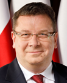

2026-08-06
Projekt wpłynął do Sejmu Druk nr 3003 ↗
w-tokuustawaPraca w komisjach po II czytaniu (2026-11-06)Sejm 10/3003
| Proces | Sejm kadencja 10, nr 3003 |
|---|---|
| Wpłynął | 2026-08-06 |
| Ostatnia zmiana źródła | 2026-11-06 |
| RCL | legislacja.rcl.gov.pl ↗ |
| Źródło | api.sejm.gov.pl ↗ |
486 zdarzeń

10. kadencja, 64. posiedzenie, 2. dzień - Sekretarz Stanu w Ministerstwie Spraw Zagranicznych Władysław Teofil Bartoszewski 10. kadencja, 64. posiedzenie, 2. dzień (03-09-2026) 20. punkt porządku dziennego: Pierwsze czytanie rządowego projektu ustawy o środkach ograniczających (druk nr 3003). Sekretarz Stanu w Ministerstwie Spraw Zagranicznych Władysław Teofil Bartoszewski: Wielce Szanowny Panie Marszałku! Wysoka Izbo! Mam zaszczyt przedstawić projekt ustawy o środkach ograniczających z druku nr 3003. Mówiąc po polsku, środki ograniczające to w normalnym języku są sankcje. W sytuacji, kiedy Rosja najechała na Ukrainę, stwarzając moment przełomowy dla bezpieczeństwa Polski i Europy, zaczęliśmy wprowadzać kolejne pakiety sankcyjne jako Unia Europejska. Ograniczenia z tym związane były i pozostają wyzwaniem dla organów administracji państw członkowskich, jak i dla podmiotów gospodarczych. W 2022 r. poprzedni rząd słusznie wprowadził, w celu skutecznego wdrażania sankcji unijnych oraz uzupełnienia ich krajowymi środkami restrykcyjnymi, ustawę o szczególnych rozwiązaniach w zakresie przeciwdziałania wspieraniu agresji na Ukrainę oraz służących ochronie bezpieczeństwa narodowego, zwaną potocznie małą ustawą sankcyjną. To było słuszne rozwiązanie, ale po 4 latach okazuje się, że to było rozwiązanie niewystarczające, dlatego że każdy nowy pakiet sankcji unijnych, a mieliśmy ich do tej pory 14, jak dobrze pamiętam, wymagał nowelizacji w.w. ustawy, tak aby było jasne, który organ w Polsce stosuje sankcje z rozporządzeń unijnych. To jest dość uciążliwe. W związku z tą ustawą z 2022 r. - która nie odpowiada na potrzebę systemowego uporządkowania mechanizmów stosowania środków ograniczających, precyzyjnego określenia kompetencji organów oraz wprowadzenia zasad odpowiedzialności administracyjnej i karnej - przygotowaliśmy w resorcie spraw zagranicznych ustawę o środkach ograniczających, która jest pierwszym w Polsce aktem prawnym regulującym w sposób kompleksowy zagadnienia związane ze stosowaniem sankcji. Jednocześnie, ponieważ doceniamy to, że ustawa z 2022 r. była ustawą słuszną, będzie ona dalej funkcjonowała, tak jak i poprzednio, w kontekście rosyjskim i białoruskim. Tak więc tej ustawy nie wykreślamy z porządku prawnego, tylko dopisujemy. Jedną z nowych rzeczy w ustawie o środkach ograniczających jest dodanie przesłanki o wpisie na listę krajową związanej z obcą ingerencją i manipulacją w środowisku informacyjnym wymierzoną w bezpieczeństwo Rzeczypospolitej Polskiej. To tzw. przesłanka FIMI, dezynformacyjna. FIMI, czyli foreign information manipulation and interference. I to jest rzecz nowa, która jest dla nas bardzo istotna, dlatego że w tej chwili oceniamy, że 50% informacji w mediach społecznościowych to są fake newsy, to informacje nieprawdziwe. I z tym musimy walczyć. Jedna z rzeczy, którą nowa ustawa zawiera, to określenie właściwości organów, które mają się tym zajmować. To z punktu widzenia przedsiębiorców polskich jest bardzo ważne, bo po pierwsze, zapewnia pewność obrotu gospodarczego, a po drugie, przedsiębiorcy będą wiedzieć, do kogo mają się zwrócić w celu uzyskania ewentualnego odstępstwa od tej ustawy i jaki organ będzie rozstrzygał w drodze decyzji administracyjnej. My jako Ministerstwo Spraw Zagranicznych jesteśmy wiodącym organem w zakresie przyjmowania sankcji na forum międzynarodowym oraz koordynującym współpracę międzyresortową na tym obszarze. Należy podkreślić, że ta ustawa odpowiada na problemy zidentyfikowane przez MSZ, a sygnalizowane przez przedsiębiorców w zakresie przejrzystości mechanizmów sankcyjnych, zwiększając tym samym pewność obrotu gospodarczego. Obecne niejasności prawne utrudniają prowadzenie działalności gospodarczej i sprzyjają nieuczciwej konkurencji. To tak w największym skrócie. Zostawię trochę czasu dla mojego kolegi, ministra spraw wewnętrznych i administracji, a oczywiście potem, po wypowiedziach klubowych jesteśmy gotowi odpowiedzieć na wszystkie państwa pytania. Jest to po
10. kadencja, 64. posiedzenie, 2. dzień - Sekretarz Stanu w Ministerstwie Spraw Wewnętrznych i Administracji Czesław Mroczek 10. kadencja, 64. posiedzenie, 2. dzień (03-09-2026) 20. punkt porządku dziennego: Pierwsze czytanie rządowego projektu ustawy o środkach ograniczających (druk nr 3003). Sekretarz Stanu w Ministerstwie Spraw Wewnętrznych i Administracji Czesław Mroczek: Szanowna Pani Marszałek! Szanowni Państwo! Tak jak powiedział pan minister Bartoszewski, bardzo krótko w uzupełnieniu tej prezentacji, której dokonał pan minister, chcę powiedzieć, że jak państwo wiecie, jak przed chwilą zostało powiedziane, obecnie minister spraw wewnętrznych i administracji prowadzi sprawy zagadnień sankcyjnych na podstawie ustawy o szczególnych rozwiązaniach w zakresie przeciwdziałania wspieraniu agresji na Ukrainę oraz służących ochronie bezpieczeństwa narodowego. To jest ustawa z dnia 13 kwietnia 2022 r. Dotychczasowe przepisy miały i mają przede wszystkim przeciwdziałać, jak wynika z samej nazwy, wspieraniu agresji Federacji Rosyjskiej na Ukrainę oraz naruszeń praw człowieka lub represji wobec społeczeństwa obywatelskiego i opozycji demokratycznej w Federacji Rosyjskiej lub na Białorusi. Stanowią one dopełnienie unijnego systemu środków ograniczających w tym zakresie, opierającego się głównie na rozporządzeniach związanych z agresją Federacji Rosyjskiej na Ukrainę z 2014 r. Zgodnie z obowiązującą ustawą minister spraw wewnętrznych i administracji prowadzi listę osób i podmiotów, wobec których stosowane są środki ograniczające. Dotychczasowe efekty stosowania krajowych przepisów sankcyjnych to 554 aktualne wpisy na listę, obejmujące 119 podmiotów gospodarczych, w tym 99 powiązanych z kapitałem rosyjskim i 20 z białoruskim, oraz 435 osób na tej liście, głównie obywateli Republiki Białorusi - 385 osób, a w dalszej kolejności obywateli Federacji Rosyjskiej - 46 osób. Projekt, który jest przedmiotem naszych obrad, naszej debaty rozszerza zakres podmiotowy stosowanych krajowych środków ograniczających także na inne osoby i podmioty objęte środkami ograniczającymi Unii Europejskiej. Już nie odnosi się tylko do agresji Rosji i nie dotyczy tylko Rosji i Białorusi, ale ma szerokie zastosowanie do każdej innej sytuacji, jeżeli będą takie działania podjęte przez unijne organy z innych względów. W nowej regulacji krajowymi środkami ograniczającymi będą mogły być objęte także całe państwa, m.in. ze względu na ochronę bezpieczeństwa narodowego czy też ochronę podstawowego interesu bezpieczeństwa Rzeczypospolitej. Ponadto projekt wprowadza nowe przesłanki wpisu na polską listę sankcyjną, tak jak powiedziałem, poza tymi, które obowiązują w tej chwili w odniesieniu do Rosji i Białorusi. Proszę państwa, można powiedzieć, że wprowadzamy szeroką, uniwersalną regulację, która będzie swoistą, zresztą tak rząd to nazwał w uzasadnieniu, konstytucją sankcyjną, zawierającą ramowe uregulowania prawne zarówno w zakresie stosowania krajowych środków ograniczających, organów właściwych do stosowania odstępstw od tych środków, jak i kar pieniężnych i sankcji karnych za ich nieprzestrzeganie. Rozwiązania te są niezbędne nie tylko z uwagi na konieczność wdrożenia do polskiego porządku prawnego dyrektywy Parlamentu Europejskiego i Rady z 24 kwietnia 2024 r. w sprawie określenia przestępstw związanych z naruszeniem unijnych środków ograniczających i sankcji za takie naruszenia, ale także ze względu na możliwość zapewnienia na poziomie krajowym reakcji na zagrożenia ochrony bezpieczeństwa narodowego lub ochrony podstawowego interesu bezpieczeństwa państwa. Proszę państwa, organem właściwym w sprawie tych sankcji w dalszym ciągu będzie minister spraw wewnętrznych i administracji. Tutaj wielkie podziękowania za olbrzymią pracę Ministerstwa Spraw Zagranicznych w przygotowaniu tego projektu. Tak jak przed chwilą powiedziałem, to przepisy uniwersalne, które będą odnosić się do każdej sytuacji, w której trzeba będzie stosować te środki ograniczające. W związku z ty
10. kadencja, 64. posiedzenie, 2. dzień - Poseł Dorota Marek 10. kadencja, 64. posiedzenie, 2. dzień (03-09-2026) 20. punkt porządku dziennego: Pierwsze czytanie rządowego projektu ustawy o środkach ograniczających (druk nr 3003). Poseł Dorota Marek: Pani Marszałek! Panie Ministrze! Wysoka Izbo! W imieniu Klubu Parlamentarnego Koalicji Obywatelskiej mam przyjemność zaprezentować stanowisko wobec projektu ustawy o środkach ograniczających. Proponowana regulacja to dojrzały, kompleksowy i niezwykle potrzebny akt prawny, prawdziwa konstytucja sankcyjna, która wreszcie buduje w Polsce profesjonalny i szczelny system ochrony naszej państwowości. Gdy przyjrzymy się historii ostatniej dekady, obraz jest jednoznaczny. Rządy Prawa i Sprawiedliwości w obszarze wdrażania i egzekwowania sankcji pozostawiły po sobie ogromny chaos i instytucjonalną prowizorkę. Poprzednicy ograniczali się głównie do głośnych politycznych deklaracji przed kamerami i pisania przepisów na kolanie pod wpływem emocji. Rozwiązania prawne były rozproszone w wielu różnych aktach, co w praktyce paraliżowało organy administracji, wywoływało niekończące się spory kompetencyjne i tworzyło ogromną niepewność prawną, w szczególności dla polskich przedsiębiorców, którzy nie wiedzieli, jak właściwie te przepisy stosować. Co więcej, luka za luką w przepisach tworzyła pole do prób ich obchodzenia. My ten etap bezmyślnego łatania dziur definitywnie kończymy. Przedłożony projekt realizuje zasadę kompleksowości wyrażonej w ˝Zasadach techniki prawodawczej˝. Porządkuje i jednoczy zasady stosowania sankcji unijnych oraz krajowych w jednym, spójnym i czytelnym akcie. Chcę zwrócić uwagę Wysokiego Sejmu na konkretne kluczowe zapisy tej ustawy. Ustawa jasno przypisuje zadania 14 organom administracji publicznej oraz tworzy interdyscyplinarny zespół do spraw środków ograniczających przy Ministerstwie Spraw Zagranicznych. Kończymy ze spychologią. Dajemy państwu jeden zintegrowany mechanizm monitorowania i egzekwowania sankcji. Projekt transponuje do polskiego porządku prawnego dyrektywę Parlamentu Europejskiego i Rady Unii Europejskiej 2024/1226. Definiujemy przestępstwa związane z naruszeniem sankcji, likwidując zjawisko tzw. forum shopping i czytelnie rozgraniczamy odpowiedzialność karną od administracyjnych kar pieniężnych nakładanych do kwoty 20 mln zł. Potwierdzamy i precyzujemy nasze autonomiczne prawo do nakładania komplementarnych środków krajowych w oparciu o przesłankę bezpieczeństwa narodowego oraz nienaruszalność granic. Katalog środków od zamrożenia aktywów przez wykluczenie z zamówień publicznych po zakazy sektorowe wprowadzane rozporządzeniem Rady Ministrów jest jasny i precyzyjny. Wprowadzamy przejrzyste reguły ustanawiania zarządu przymusowego w celu zbycia lub przejęcia własności na rzecz Skarbu Państwa. Co niezwykle istotne, przy ustalaniu ewentualnych odszkodowań ustawodawca nakazuje uwzględnić zasadę wzajemności. Państwo musi szanować prawa majątkowe Polaków. Fundamentalnym zapisem jest gwarancja solidarności społecznej i osłony pracowników. Zapewniamy wypłatę świadczeń z Funduszu Gwarantowanych Świadczeń Pracowniczych dla osób zatrudnionych w podmiotach objętych sankcjami. Ciężar walki z wrogiem i reżimami, nielegalną agresją nigdy więcej nie będzie przerzucany na barki zwykłych polskich pracowników i ich rodzin. Ta ustawa daje polskim służbom i organom administracji nowoczesne, przewidywalne i skuteczne narzędzia działania. Przechodzimy od ery reaktywnego chaosu do ery dojrzałego, odpowiedzialnego zarządzania bezpieczeństwem państwa i stabilnością naszej gospodarki. W imieniu Klubu Parlamentarnego Koalicji Obywatelskiej z pełnym przekonaniem wnoszę o skierowanie ustawy do dalszych prac w komisji. Dziękuję. (Oklaski) Przebieg posiedzenia
10. kadencja, 64. posiedzenie, 2. dzień - Poseł Jarosław Zieliński 10. kadencja, 64. posiedzenie, 2. dzień (03-09-2026) 20. punkt porządku dziennego: Pierwsze czytanie rządowego projektu ustawy o środkach ograniczających (druk nr 3003). Poseł Jarosław Zieliński: Pani Marszałek! Wysoki Sejmie! Unia Europejska w ramach wspólnej polityki zagranicznej i bezpieczeństwa stosuje środki ograniczające jako instrument obrony wartości, które są dla niej ważne i bliskie, ale wdrażanie tych środków ograniczających, tych sankcji jest pozostawione krajom członkowskim. I one muszą te ograniczenia wdrażać. Jednocześnie nasz kraj, Polska, powinien też posiadać instrumenty, system sankcyjny, który służy naszemu bezpieczeństwu i obronie wartości, które są nam bliskie: bezpieczeństwa, suwerenności państwa, integralności terytorialnej i demokracji. To jest ważny instrument i powinniśmy oczywiście być przygotowani prawnie do tego, żeby go stosować. Deklarowanym celem projektu ustawy o środkach ograniczających... Nawiasem mówiąc, ustawa ma dosyć fatalny tytuł, bo w zasadzie dla niezorientowanego czytelnika nie odnosi się do niczego. Pomyślmy nad tym wspólnie, jak może inaczej to nazwać, bo co to są środki ograniczające, z czym to się kojarzy. My wiemy, bo znamy treść ustawy, ale wydaje mi się, że to nie jest fortunny zapis. Do przemyślenia. Ale deklarowanym celem tego projektu ustawy jest uregulowanie w sposób kompleksowy, ideologicznie, o tym mówiła moja poprzedniczka - do tego się nie odnoszę, to bez sensu, nie ma to żadnego znaczenia - systemu związanego z wdrażaniem i stosowaniem w Rzeczypospolitej Polskiej środków ograniczających przyjmowanych na forum Unii Europejskiej oraz krajowych środków ograniczających, tzw. sankcji. W obu przypadkach zapewnienie przejrzystości, czytelności tych przepisów. Nawet według projektodawców ustawa ma stanowić swoistą konstytucję sankcyjną. Przy konstytucji ona nawet nie leżała, panowie ministrowie. Faktem jest, że ona zawiera cały szereg niejasnych regulacji wymagających wyjaśnień. Będziemy o tym rozmawiali w komisji, pewnie dobrze by było powołać podkomisję, bo sprawa jest ważna, wymaga szczegółowych analiz. Ale tak po kolei. Pierwsze pytanie, które się pojawia, to dlaczego nie wdrożono do polskiego systemu prawnego przepisów unijnych w terminie, który był wyznaczony przez Unię Europejską, do 20 maja 2025 r. Teraz pojawia się rzekoma kompleksowa ustawa - ona nie jest żadną kompleksową ustawą, bo oprócz tego, co jest w deklaracjach, mamy do czynienia z sytuacją, kiedy pozostaje ta specustawa ukraińska, nazwijmy ją umownie. Dobrze, że ona pozostaje, bo ona jest bardzo skuteczna w działaniu, a jednocześnie pan minister powiedział, że mają być w sposób systemowy i ponadczasowy, ponadsytuacyjny uregulowane kwestie związane z sankcjami. To mam pytanie do ministra spraw zagranicznych, bo to pan o tym mówił. Jeżeli wobec Rosji i Białorusi mamy kwestie uregulowane w tamtej specustawie, to co tutaj regulujemy? Jakie zagrożenia, ze strony jakiego państwa? Mamy jakieś nowe zagrożenia? Chcielibyśmy usłyszeć, z jakich kierunków te zagrożenia płyną, bo nie bardzo rozumiem, o co tu chodzi. Mamy jedną dobrą ustawę, robimy drugą. Minister właściwy do spraw wewnętrznych będzie prowadził dwie listy: listę sankcyjną rosyjsko-białoruską i jakąś inną, nową listę sankcyjną. Oczywiście ja wiem, do czego ona będzie się odnosiła, będzie dotyczyła tego jednego elementu, który wprowadzacie jako krajowe środki ograniczające. Choć w deklaracji bardzo słusznie to jest uwzględniane jako ochrona bezpieczeństwa i porządku publicznego, mają to być sankcje wobec podmiotów i osób, które bezpośrednio lub pośrednio, posłuchajcie państwa tego dobrze, wspierają obce interwencje w środowisku informacyjnym, wymierzone w bezpieczeństwo narodowe, nienaruszalność granic, interesy i pozycję międzynarodową Rzeczypospolitej Polskiej. Bezpośrednio lub pośrednio wspierających obcą interwencję w środowisku informacyjnym - bardzo to brzmi niepokojąco i my
10. kadencja, 64. posiedzenie, 2. dzień - Poseł Sylwester Tułajew 10. kadencja, 64. posiedzenie, 2. dzień (03-09-2026) 20. punkt porządku dziennego: Pierwsze czytanie rządowego projektu ustawy o środkach ograniczających (druk nr 3003). Poseł Sylwester Tułajew: Pani Marszałek! Wysoka Izbo! Polska oczywiście potrzebuje skutecznego i szczelnego systemu sankcji. Rosja prowadzi brutalną wojnę przeciwko Ukrainie, a jednocześnie podejmuje działania wymierzone w bezpieczeństwo Polski i całej Europy. Osoby, firmy i instytucje wspierające rosyjską agresję, finansujące terroryzm, pomagające w omijaniu sankcji albo ukrywające majątek muszą spotkać się z szybką i zdecydowaną reakcją naszego państwa. Mówię tutaj o Rosji, ale jak słusznie zauważył pan minister spraw zagranicznych, ta ustawa nie dotyczy wyłącznie Rosji, jest szersza, mówi o szerszej działalności. Ustawa stricte mówiąca o Rosji już jest przyjęta, mówił o niej minister spraw wewnętrznych i administracji. Powiedzmy jednak jasno, że właśnie w takich sprawach, o których mówiłem wcześniej, nie można zwlekać. Jeżeli istnieje ryzyko wyprowadzenia majątku, państwo powinno działać natychmiast i bez uprzedzania zainteresowanych. Zamrożenie środków musi być realne, a nie tylko zapisane w ustawie. Sankcje powinny być dotkliwe, nieuchronne i skutecznie egzekwowane. Dlatego ta ustawa jest w mojej ocenie potrzebna. Potrzebne są również przepisy umożliwiające Polsce samodzielne działanie, gdy wymaga tego nasze bezpieczeństwo, a decyzje na poziomie europejskim są opóźniane albo blokowane, co obserwowaliśmy wielokrotnie. Nie pytam więc, czy państwo powinno działać, mówię o tym, że powinno działać, ale powinno działać szybko. Największe wątpliwości pokazuje sama ocena skutków regulacji. Projekt obejmuje ponad 40 unijnych reżimów sankcyjnych, ok. 3 mln aktywnych przedsiębiorców oraz liczne ministerstwa. Rząd tak naprawdę miał bardzo dużo czasu, aby przygotować tę ustawę. Termin wdrożenia dyrektywy upłynął 20 maja 2025 r. Komisja Europejska wydała wobec Polski uzasadnioną opinię. Dzisiaj nie możemy nadrabiać opóźnienia kosztem jakości prawa, sprawczości i sprawności instytucji odpowiedzialnych za sankcje. Mówiąc o tych wątpliwościach, zwracam uwagę na to, co zostało zapisane w ocenie skutków regulacji. Przyjęto tam tylko 1 mln zł wydatków rocznie w części: gospodarka. Nie oszacowano rzeczywistych kosztów nowych kontroli, postępowań, szkoleń, systemów informatycznych, zarządów ani ewentualnych przejęć majątku. Co więcej, Urząd Komisji Nadzoru Finansowego wskazywał potrzebę dwóch dodatkowych etatów. Generalny inspektor informacji finansowych wystąpił o kolejne dwa etaty i wyliczył ich koszt na ponad 450 tys. zł rocznie. Rząd rzeczywiście oznaczył te uwagi jako uwzględnione, ale tak naprawdę w końcowym OSR-ze tych etatów nie ma i koszty nie zostały uwzględnione. Więc zasadnicze pytanie jest takie: Jak organy państwa mają skutecznie wykrywać podstawione spółki, ukrytych beneficjentów, fikcyjne transakcje i próby wyprowadzania majątku, jeżeli nie otrzymają odpowiednich narzędzi i zasobów ludzkich oraz pieniędzy? Czy powstanie jeden aktualny system informacji o sankcjach? Pytał o to pan poseł Zieliński. Chodzi o system informacji o sankcjach dostępny dla banków, przedsiębiorców, samorządów i instytucji publicznych. Czy przed wejściem ustawy w życie zostaną przygotowane jasne wytyczne, procedury i szkolenia? 30-dniowe vacatio legis, które zostało zapisane w tej ustawie, to tak naprawdę bardzo krótki czas na przygotowanie się do wdrożenia tak szerokiej regulacji. Chciałbym jasno zaznaczyć, że bardzo mocno popieram natychmiastową wykonalność decyzji sankcyjnych. Nie można tutaj w żaden sposób ostrzegać osób współpracujących z różnymi reżimami, że państwo za kilka dni zamrozi ich majątek. Jednocześnie te decyzje muszą być dobrze udokumentowane i szybko kontrolowane przez sąd. Popieram skierowanie tego projektu do dalszych prac. Będę domagał się jego wzmocnienia, czyli realnego finansowania organów,
10. kadencja, 64. posiedzenie, 2. dzień - Poseł Michał Pyrzyk 10. kadencja, 64. posiedzenie, 2. dzień (03-09-2026) 20. punkt porządku dziennego: Pierwsze czytanie rządowego projektu ustawy o środkach ograniczających (druk nr 3003). Poseł Michał Pyrzyk: Dziękuję bardzo. Szanowna Pani Marszałek! Panowie Ministrowie! Wysoka Izbo! Mam niezmierny zaszczyt zaprezentować stanowisko Klubu Parlamentarnego Polskie Stronnictwo Ludowe w sprawie rządowego projektu ustawy o środkach ograniczających, który ma na celu nie tylko wdrożenie przepisów unijnych, ale przede wszystkim wzmocnienie bezpieczeństwa narodowego. Tak jak była już o tym mowa, definiuje on zasady stosowania sankcji gospodarczych, takich jak zamrażanie funduszy, zasobów, również wobec podmiotów wspierających agresję militarną lub naruszających prawa człowieka. Kluczowym elementem tej regulacji jest utworzenie krajowej listy sankcyjnej, którą prowadzić będzie, jak słyszeliśmy, minister spraw wewnętrznych i administracji. Szanowni państwo, nie ma nic gorszego niż martwe przepisy czy martwe sankcje. Dlatego nadrzędnym celem tej regulacji jest skuteczne egzekwowanie międzynarodowych i krajowych restrykcji przy jednoczesnym, co bardzo ważne, zachowaniu stabilności gospodarczej kraju. Ta ustawa poza uporządkowaniem pewnych pojęć, tak jak powiedziałem, implementuje również stosowną unijną dyrektywę i pozwalać będzie na jej bezpośrednie stosowanie, o czym mówił minister Bartoszewski, w ramach przyszłych reżimów sankcyjnych przyjmowanych przez Unię Europejską. Ustawa likwiduje też chaos kompetencyjny, precyzyjnie przypisuje zadania poszczególnym organom administracji publicznej, eliminuje dotychczasowe spory kompetencyjne, tworzy też zespół do spraw środków ograniczających, który będzie w przyszłości koordynować polską politykę sankcyjną i zapewniać spójność wszystkich prowadzonych działań. Projekt potwierdza również i systematyzuje stosowanie krajowych sankcji, które mają mieć charakter subsydiarny, uzupełniający względem unijnych. Będą to środki indywidualne, czyli te nakładane na konkretne podmioty i osoby, i obejmą one nie tylko zamrożenie aktywów, ale też zakaz udostępniania tym podmiotom, tym osobom, środków finansowych. Oczywiście będzie tu też chodziło o wpis do wykazu cudzoziemców niepożądanych oraz wykluczenie z postępowań o udzielenie zamówienia publicznego. Oprócz tego będą środki generalne, środki gospodarcze, można powiedzieć, sektorowe. Rada Ministrów będzie mogła na wniosek ministra spraw zagranicznych wprowadzić w drodze rozporządzenia czasowy zakaz lub ograniczenie współpracy gospodarczej z określonym państwem trzecim. Ustawa przewiduje, co też bardzo ważne, możliwość utworzenia, ustanowienia tymczasowego zarządu przymusowego nad przedsiębiorstwami z listy sankcyjnej, aby zapewnić im dalsze funkcjonowanie, a przede wszystkim ochronę miejsc pracy. Szczegółowo określa procedury zbywania majątku osób objętych restrykcjami oraz zasady współpracy organów państwowych w tym zakresie. W sytuacjach ochrony ważnego interesu publicznego lub bezpieczeństwa państwa będzie możliwe przejęcie aktywów na własność Skarbu Państwa, oczywiście za odszkodowaniem, a pracownikom zatrudnionym w podmiotach objętych krajowymi sankcjami w razie nagłego wstrzymania działalności, niewypłacalności pracodawcy będą również wypłacane świadczenia z Funduszu Gwarantowanych Świadczeń Pracowniczych w celu zaspokojenia ich należności za okres nie dłuższy niż 3 miesiące. W celu uszczelnienia systemu ustawa wprowadza również wymóg uzyskania uprzedniej zgody ministra właściwego do spraw gospodarki na zbycie lub obciążenie udziałów lub akcji podmiotu wpisanego na listę sankcyjną. Dokonanie takich czynności bez stosownej zgody będzie skutkować, co naturalne, ich bezwzględną nieważnością. Ustawa kompleksowo reguluje kary za naruszenie i obchodzenie sankcji. My, Klub Parlamentarny Polskie Stronnictwo Ludowe, z uwagi (Dzwonek) na wagę regulacji i potrzebę naszym zdaniem pilnego wejścia w życie tych pr
10. kadencja, 64. posiedzenie, 2. dzień - Poseł Ryszard Wilk 10. kadencja, 64. posiedzenie, 2. dzień (03-09-2026) 20. punkt porządku dziennego: Pierwsze czytanie rządowego projektu ustawy o środkach ograniczających (druk nr 3003). Poseł Ryszard Wilk: Bardzo dziękuję. Pani Marszałek! Panie i Panowie Posłowie! Panowie Ministrowie! Państwo z Ministerstwa! Sankcje mają być gospodarczą bronią przeciwko tym, którzy stanowią zagrożenie dla Rzeczypospolitej Polskiej lub Europy. Problem zaczyna się wtedy, kiedy broń jest obarczona wadą, ponieważ wtedy może się okazać, że może bardziej zranić tego, kto ją trzyma, niż tego, przeciwko komu jest wymierzona. Druk nr 3003 ma uporządkować polski system wykonywania sankcji i wdrożyć unijną dyrektywę dotyczącą kar za ich naruszanie. Samo uporządkowanie przepisów oczywiście ma sens. Dzisiaj regulacje są rozproszone, a przedsiębiorcy często mają problem nawet z ustaleniem, który organ jest do tego właściwy. Tutaj jest zasadniczy problem. My po raz kolejny rozbudowywujemy bardzo silne narzędzia wobec polskich obywateli i przedsiębiorców, podczas gdy sam europejski system sankcji przypomina ser szwajcarski. Unia przyjęła już 21 pakietów sankcji wobec Rosji. A mimo to Komisja Europejska przyznaje, że sankcjonowane towary są systematycznie reeksportowane do Rosji przez państwa trzecie. W kwietniu tego roku po raz pierwszy uruchomiono specjalny mechanizm przeciwko Kirgistanowi, ponieważ z danych handlowych wynikał znaczący wzrost reeksportu europejskich obrabiarek i sprzętu telekomunikacyjnego do Federacji Rosyjskiej. W lipcu było jeszcze ciekawiej. Na listę podmiotów pomagających rosyjskiemu przemysłowi zbrojeniowemu albo obchodzących sankcje wpisano kolejne firmy z Chin, Turcji, Kirgistanu, Indii, Kazachstanu i Zjednoczonych Emiratów Arabskich. Chodzi m.in. o mikroelektronikę, obrabiarki CNC czy urządzenia do produkcji półprzewodników. Czyli zamykamy drzwi, ale towar wchodzi przez okno. Do tego dochodzą same wyjątki wewnątrz Unii Europejskiej. Np. przez lata rosyjska ropa płynęła rurociągiem Przyjaźń do Węgier i Słowacji dzięki wyłączeniom z embarga lub były inne produkty, które poszczególne państwa sobie wyłączały z embarga pod różnymi pozorami. Na tym tle Polska tworzy ustawę, która daje administracji bardzo, ale to bardzo daleko idące kompetencje. Minister będzie mógł wpisać osobę lub firmę na listę sankcyjną, zamrozić jej pieniądze i majątek, wykluczyć z zamówień publicznych, a decyzja będzie natychmiast wykonalna. Uwaga: skarga do sądu nie zatrzyma automatycznie jej działania. Możliwy będzie również przymusowy zarząd przedsiębiorstwem trwający łącznie nawet 36 miesięcy, w czasie którego właściciel traci możliwość zarządzania swoim majątkiem. Przecież pomyłki się zdarzają. W 36 miesięcy można wyłożyć każdą firmę. Każdą. Dlatego pytam, czy naprawdę największym problemem europejskiego systemu sankcji jest dziś to, że polski minister ma za mało instrumentów wobec polskich firm. Może najpierw należałoby zadbać o to, żeby sankcje na poziomie europejskim były rzeczywiście szczelne, żeby państwa członkowskie nie miały kolejnych wyjątków, a towary objęte zakazem nie jechały do Rosji przez Kirgistan, Kazachstan, Turcję czy Zjednoczone Emiraty Arabskie. Sankcje mają sens tylko wtedy, kiedy są naprawdę skuteczne. Jeżeli natomiast tworzymy coraz ostrzejsze przepisy dla własnych obywateli, a jednocześnie tolerujemy gigantyczne dziury w systemie międzynarodowym, to zaczyna to bardziej przypominać administrowanie samymi sankcjami niż faktycznie uderzanie nimi w Rosję. Szanowni Państwo! Kończę. Proporcjonalność tych narzędzi oraz realna kontrola sądowa powinny być tutaj przedmiotem szczególnie poważnej dyskusji. Dziękuję bardzo. Przebieg posiedzenia
10. kadencja, 64. posiedzenie, 2. dzień - Poseł Marcin Skonieczka 10. kadencja, 64. posiedzenie, 2. dzień (03-09-2026) 20. punkt porządku dziennego: Pierwsze czytanie rządowego projektu ustawy o środkach ograniczających (druk nr 3003). Poseł Marcin Skonieczka: Szanowna Pani Marszałek! Panowie Ministrowie! Wysoka Izbo! Mam zaszczyt przedstawić stanowisko klubu Centrum w sprawie rządowego projektu ustawy o środkach ograniczających. Środki ograniczające, jak już było powiedziane, zwane potocznie sankcjami, są dziś jednym z podstawowych narzędzi wspólnej polityki zagranicznej i bezpieczeństwa Unii Europejskiej. Służą ochronie bezpieczeństwa i podstawowych wartości Unii, utrzymaniu międzynarodowego pokoju, a także wspieraniu demokracji, państwa prawa i praw człowieka. Ich sens jest prosty. Kiedy jakieś państwo dokonuje agresji, łamie prawo międzynarodowe albo kiedy konkretne osoby czy organizacje odpowiadają za działania zagrażające bezpieczeństwu, społeczność międzynarodowa potrzebuje narzędzi nacisku innych niż użycie siły. Temu właśnie służą sankcje. Ich celem jest wywieranie presji i doprowadzenie do zmiany szkodliwej polityki lub działania. Mogą one być skierowane przeciwko państwom, ale również przeciwko konkretnym osobom, organizacjom czy przedsiębiorstwom. W praktyce mogą oznaczać zamrożenie majątku, zakaz wjazdu na terytorium Unii, embargo na broń, ograniczenie importu i eksportu czy ograniczenia w dostępie do określonych usług, w tym usług bankowych. Najbardziej oczywistym dla nas przykładem jest dziś Rosja. Sankcje mają ograniczać jej możliwości finansowania wojny, pozyskiwania technologii i komponentów potrzebnych przemysłowi zbrojeniowemu oraz zwiększać koszty prowadzenia agresji przeciwko Ukrainie. Ale system sankcyjny Unii Europejskiej jest znacznie szerszy. Obecnie funkcjonuje kilkadziesiąt różnych reżimów sankcyjnych. Dotyczą one nie tylko Rosji i Białorusi, ale także sytuacji w różnych krajach, takich jak np. Iran, Korea Północna, Syria, Wenezuela, Nikaragua czy Niger. Właśnie tutaj dochodzimy do zasadniczego problemu, który ma rozwiązać ta ustawa. Sankcje można przyjąć na poziomie Unii Europejskiej, ale ktoś musi je jeszcze skutecznie wykonać. Za wdrażanie i egzekwowanie innych środków ograniczających odpowiadają państwa członkowskie. Tymczasem obecnie polskie przepisy mają węższy zakres i są w znacznej mierze związane z sankcjami przyjętymi w odpowiedzi na rosyjską agresję przeciwko Ukrainie. Dlatego potrzebujemy nowego rozwiązania systemowego. Ta ustawa ma mieć charakter horyzontalny. Oznacza to, że obejmuje wszystkie reżimy sankcyjne Unii Europejskiej, zarówno te obowiązujące dzisiaj, jak i kolejne, które mogą zostać ustanowione w przyszłości. Nie chcemy za każdym razem tworzyć odrębnych mechanizmów wykonywania nowych sankcji. Potrzebujemy jednego, trwałego systemu, który pozwoli polskim organom skutecznie je wdrażać i egzekwować. Drugim powodem przyjęcia tej ustawy jest konieczność wdrożenia unijnej dyrektywy 2024/1226. To jest oczywiste, że te jednolite zasady odpowiedzialności mają ułatwić prowadzenie postępowań transgranicznych i ograniczyć sytuacje, w których sprawcy wybierają państwo, w którym najłatwiej jest obchodzić sankcje. Ale ten projekt ma jeszcze jeden istotny wymiar, o czym była już mowa. Potwierdza możliwość wstrzymywania i stosowania przez Polskę własnych, krajowych środków ograniczających, opartych na przesłance bezpieczeństwa narodowego lub ochrony podstawowego interesu bezpieczeństwa państwa. To ważne, ponieważ zagrożenia dla bezpieczeństwa Polski nie zawsze muszą być identyczne z zagrożeniami postrzeganymi przez wszystkie państwa Unii Europejskiej. Polska musi zachować możliwość realizacji również wtedy, gdy wymaga tego bezpośredni interes państwa. To rozwiązanie w uzasadnieniu projektu jest nazywanym mianem swoistej konstytucji sankcyjnej, jednej ustawy zawierającej podstawowe reguły funkcjonowania systemu sankcyjnego w Polsce. Pokrótce powiem, co się zmieni. Po pierwsze, ustawa
10. kadencja, 64. posiedzenie, 2. dzień - Poseł Sławomir Zawiślak 10. kadencja, 64. posiedzenie, 2. dzień (03-09-2026) 20. punkt porządku dziennego: Pierwsze czytanie rządowego projektu ustawy o środkach ograniczających (druk nr 3003). Poseł Sławomir Zawiślak: Pani Marszałek! Wysoka Izbo! Panowie Ministrowie! Państwo musi umieć bronić się przed obcymi służbami, finansowaniem wrogich reżimów i obchodzeniem sankcji. Musi również umieć powiedzieć: nie, gdy państwa Unii nie potrafią podjąć jednomyślej decyzji. Tę część projektu należy potraktować poważnie. Jednak w imieniu koła parlamentarnego Konfederacji Korony Polskiej pragnę poruszyć tylko kilka problemów związanych z tym projektem ustawy. Według nas państwo silne to nie jest państwo, w którym minister może najpierw zamrozić człowiekowi majątek, a dopiero później wyjaśnić, dlaczego to zrobił. Spójrzmy na art. 4 projektu. Na listę sankcyjną będzie można wpisać osobę lub podmiot za bezpośrednie, ale i pośrednie wspieranie obcej ingerencji i manipulacji w środowisku informacyjnym. Co to dokładnie znaczy? Projekt tego nie definiuje. Nie wymaga wyraźnie działania na zlecenie obcego państwa. Nie wymaga świadomego udziału w jego operacji. A skutek nie jest symboliczny. Minister będzie mógł zamrozić obywatelowi pieniądze, majątek. Dezyzja stanie się wykonalna następnego dnia po umieszczeniu jej w Biuletynie Informacji Publicznej bez ponownego rozpatrzenia sprawy. Można oczywiście pójść do sądu, tylko co obywatelowi, przedsiębiorcy pozostanie po wielu miesiącach bez kont, płynności finansowej. Projekt nadgorliwie wdraża unijną dyrektywę o karaniu za obchodzenie sankcji. Rząd, dokonując politycznego wyboru, w tym projekcie tworzy nieostry instrument przeciwko aktywności informacyjnej obywateli instytucji publicznych. Jeszcze jedno spostrzeżenie. Kara administracyjna może wynieść 20 mln zł. Tymczasem rząd wpisuje w OSR zerowe koszty dla przedsiębiorców. Koło Konfederacji Korony Polskiej popiera prawo Polski do prowadzenia własnej polityki bezpieczeństwa. Nie popiera natomiast zamordyzmu władzy godzącego w wolność słowa, wolność jednostki, uzasadnionego straszakami przedstawianymi przez polityków chcących poszerzyć zakres swojej władzy. Dlatego w przypadku tego projektu żądamy niezbędnych zabezpieczeń, m.in. precyzyjnej definicji obcej operacji informacyjnej, szybkiej kontroli sądowej, ochrony przedsiębiorcy, który dochował należytej staranności. Państwo ma ścigać agenturę, a nie tworzyć przepis, pod który kiedyś można podciągnąć każdego niewygodnego wydawcę, fundację czy przedsiębiorcę. Obrona suwerenności nie może polegać na oddaniu urzędnikowi władzy nad cudzym majątkiem, wolnością obywatela. Dlatego ten projekt należy poprawić, a jeżeli rząd odmówi, należy go odrzucić. Dziękuję bardzo. (Oklaski) Przebieg posiedzenia
10. kadencja, 64. posiedzenie, 2. dzień - Poseł Sylwester Tułajew 10. kadencja, 64. posiedzenie, 2. dzień (03-09-2026) 20. punkt porządku dziennego: Pierwsze czytanie rządowego projektu ustawy o środkach ograniczających (druk nr 3003). Poseł Sylwester Tułajew: Pani Marszałek! Wysoka Izbo! Podstawowe pytanie, które właściwie już zadawałem, ale chcę je wzmocnić, prosząc o konkretną odpowiedź, dotyczy tego, czy powstanie jeden aktualny system informacji, z którego skorzystają banki, przedsiębiorcy, samorządy i organy kontrolne. Po drugie, chciałbym zapytać, czy vacatio legis, to 30-dniowe, o którym wspominałem w swoim wystąpieniu, wystarczy na przygotowanie procedur, systemów informatycznych i przeszkolenie wszystkich organów, które są uwzględnione w tej ustawie. Czy limit 1 mln zł rocznie pozwoli prowadzić zarządy, zabezpieczyć przedsiębiorstwa i przejmować strategiczne aktywa? I ostatnie pytanie: Dlaczego GIIF oraz Urząd Kontroli Nadzoru Finansowego wskazały potrzebę dodatkowych etatów, a końcowa ocena skutków regulacji tych zapotrzebowań nie uwzględnia? Dziękuję. (Oklaski) Przebieg posiedzenia
10. kadencja, 64. posiedzenie, 2. dzień - Poseł Anna Kwiecień 10. kadencja, 64. posiedzenie, 2. dzień (03-09-2026) 20. punkt porządku dziennego: Pierwsze czytanie rządowego projektu ustawy o środkach ograniczających (druk nr 3003). Poseł Anna Kwiecień: Bardzo dziękuję. Pani Marszałek! Wysoka Izbo! Panie Ministrze! Projekt wprowadza możliwość wpisu na listę sankcyjną za bezpośrednie lub pośrednie wspieranie obcej ingerencji i manipulacji w środowisku informacyjnym, jeżeli jest ona wymierzona w bezpieczeństwo narodowe. To jest kluczowy problem, jak precyzyjnie zostaną określone wspieranie, ingerencja i manipulacja. Bo między świadomą współpracą z obcym państwem a np. udostępnieniem informacji, komentarzem, publikacją dziennikarską czy błędną analizą eksperta jest ogromna różnica. Decyzja o wpisie ma bardzo poważne skutki majątkowe. Wpis może oznaczać zamrożenie środków finansowych i majątku oraz zakaz udostępnienia osobie objętej sankcjami pieniędzy lub innych aktywów. To oznacza, że trzeba szczególnie mocno pytać o standard dowodowy przed wpisem. Dlatego mam pytanie: Czy rząd (Dzwonek) zagwarantuje, że przed wpisem osoby lub przedsiębiorcy na Krajową Listę Sankcyjną organ będzie musiał przedstawić konkretne i weryfikowalne dowody świadomego działania oraz rzeczywistego zagrożenia dla bezpieczeństwa narodowego, a nie jedynie szeroko interpretowaną ingerencję czy manipulację informacjami? Dziękuję bardzo. (Oklaski) Przebieg posiedzenia
10. kadencja, 64. posiedzenie, 2. dzień - Poseł Maria Koc 10. kadencja, 64. posiedzenie, 2. dzień (03-09-2026) 20. punkt porządku dziennego: Pierwsze czytanie rządowego projektu ustawy o środkach ograniczających (druk nr 3003). Poseł Maria Koc: Szanowna Pani Marszałek! Wysoka Izbo! Panie Ministrze! Mam pytania do ministra spraw wewnętrznych. Panie ministrze, kto konkretnie będzie decydował, że określona działalność, wypowiedź, publikacja są, i tu cytuję, ingerencją i manipulacją informacjami wymierzonymi w bezpieczeństwo narodowe? Czy rząd ma zamknięty katalog takich zachowań, czy też minister będzie miał możliwość dokonywania własnej oceny? Kto poniesie odpowiedzialność, jeżeli ta ocena okaże się błędna? Czy obywatel albo firma wpisani na listę sankcyjną będą mogli skutecznie obronić się przed tą decyzją, zanim zostaną zamrożone ich środki i faktycznie zablokowana działalność? Jeżeli tak, to jaki konkretnie mechanizm ochrony przewiduje ustawa. Jeśli nie, to dlaczego? I na koniec. Bezpieczeństwo państwa wymaga zdecydowanej walki z rosyjską dezinformacją i obcą ingerencją. Ale czy rząd jest gotowy, aby zagwarantować, że nowe przepisy nie będą wykorzystywane do sankcjonowania legalnej (Dzwonek) działalności medialnej, publicystycznej czy politycznej? Czy minister może dziś jasno powiedzieć: krytyka rządu, nawet ostra i niewygodna, nigdy sama w sobie nie będzie podstawą wpisania na listę sankcyjną? Dziękuję. (Oklaski) Przebieg posiedzenia
10. kadencja, 64. posiedzenie, 2. dzień - Poseł Zofia Czernow 10. kadencja, 64. posiedzenie, 2. dzień (03-09-2026) 20. punkt porządku dziennego: Pierwsze czytanie rządowego projektu ustawy o środkach ograniczających (druk nr 3003). Poseł Zofia Czernow: Pani Marszałek! Wysoki Sejmie! Panowie Ministrowie! Projekt ustawy wdraża dyrektywę Unii Europejskiej dotyczącą europejskich środków ograniczających. Jednocześnie kompleksowo wprowadza system krajowych środków ograniczających. Jest to szeroka regulacja, ale też bardzo trudna. Moje pytanie dotyczy listy, którą prowadzić będzie Ministerstwo Spraw Wewnętrznych i Administracji. Moje pytanie nie dotyczy spraw związanych z bezpieczeństwem, z jakimś zagrożeniem dla kraju czy tego typu innymi działaniami, raczej ekonomicznymi czy dotyczącymi środków finansowych. Lista zawiera bardzo szczegółowe dane wrażliwe: imię, nazwisko, datę i miejsce urodzenia, informacje o zastosowanych środkach ograniczających itd. Mam pytanie: Czy wobec tych niezagrożeń (Dzwonek) bezpieczeństwa nie jest to zbyt restrykcyjne ujawnianie takich danych? Dziękuję. (Oklaski) Przebieg posiedzenia
10. kadencja, 64. posiedzenie, 2. dzień - Poseł Włodzimierz Skalik 10. kadencja, 64. posiedzenie, 2. dzień (03-09-2026) 20. punkt porządku dziennego: Pierwsze czytanie rządowego projektu ustawy o środkach ograniczających (druk nr 3003). Poseł Włodzimierz Skalik: Szanowna Pani Marszałek! Panie Ministrze! Doprawdy mrozi krew w żyłach ta część odnosząca się do krajowych środków ograniczających. Tego po pana rządzie i po panu bym się nie spodziewał. To wielki zamach na wolność słowa, na wolność słowa w infosferze. To jest brutalne tłumienie swobody wypowiedzi. Czyżby to była odpowiedź rządu na nieskuteczność propagandy prowojennej? Czy to jest odpowiedź rządu na tłumienie prawdy o relacjach polsko-ukraińskich, o tym, że Ukraina ma roszczenia terytorialne w stosunku do Polski? Mrożenie aktywów poprzez publikacje w Biuletynie Informacji Publicznej to jest czysty terroryzm państwowy, jak przystało na prawdziwą komunę. Tego typu stosowane praktyki po prostu (Dzwonek) przerażają. Czy po wejściu w życie tej ustawy będzie można skrytykować wypowiedź pani minister Magdaleny Sobkowiak, która stwierdziła, że jesteśmy absolutnie gotowi na konfrontację wojenną z Rosją? Czy będzie można pod rządami tej ustawy krytycznie rozmawiać o tej wypowiedzi? Przebieg posiedzenia
10. kadencja, 64. posiedzenie, 2. dzień - Poseł Jarosław Zieliński 10. kadencja, 64. posiedzenie, 2. dzień (03-09-2026) 20. punkt porządku dziennego: Pierwsze czytanie rządowego projektu ustawy o środkach ograniczających (druk nr 3003). Poseł Jarosław Zieliński: Jeszcze raz. Cel ustawy: kompleksowe uporządkowanie systemu sankcyjnego. Praktyka jaka będzie? Minister spraw zagranicznych będzie koordynował wdrażanie sankcji Unii Europejskiej. Przy nim będzie powołany ten zespół do spraw ograniczeń. Będzie jedna lista sankcyjna ministra spraw wewnętrznych - ta białorusko-rosyjska czy rosyjsko-białoruska. Druga dotyczy tej bardzo niebezpiecznej, nieostrej przesłanki związanej z pośrednią lub bezpośrednią interwencją w środowisku informacyjnym. Wszyscy od pewnego czasu tu o tym mówimy. Ponieważ to uporządkowanie jest bardzo wątpliwe, pytanie brzmi: Czy były dotychczas, panowie ministrowie, jakieś realne problemy związane z wdrażaniem pakietów sankcyjnych Unii Europejskiej w Polsce? Czy w ogóle odnotowano jakieś poważne kwestie problemowe z tym związane, bo one nie są mi znane? Może znacie jakieś poważne zagrożenia, kłopoty z wdrażaniem? (Dzwonek) Mam wrażenie, że ta przesłanka krajowego systemu ograniczającego odnosi się tylko do tej sfery politycznej. Będziemy to bardzo mocno drążyć na kolejnych etapach prac nad ustawą. Przebieg posiedzenia
10. kadencja, 64. posiedzenie, 2. dzień - Sekretarz Stanu w Ministerstwie Spraw Zagranicznych Władysław Teofil Bartoszewski 10. kadencja, 64. posiedzenie, 2. dzień (03-09-2026) 20. punkt porządku dziennego: Pierwsze czytanie rządowego projektu ustawy o środkach ograniczających (druk nr 3003). Sekretarz Stanu w Ministerstwie Spraw Zagranicznych Władysław Teofil Bartoszewski: Szanowna Pani Marszałek! Wysoka Izbo! Zacznijmy od początku. Rozumiem, że ustawa, której nazwa to: ustawa o środkach ograniczających, budzi zastrzeżenia. Gdy posługujemy się językiem potocznym, mówimy o sankcjach. Jednak ten termin to jest termin używany przez Organizację Narodów Zjednoczonych, przez Unię Europejską i przez inne ciała międzynarodowe, ponieważ restrictive measures albo measure restrictive to są normalne określenia używane w tych organizacjach. Po prostu przetłumaczyliśmy to na polski i tak tego używamy. W życiu, w języku potocznym mówimy oczywiście o sankcjach, ale to słowo nie powinno być w projekcie ustawy wymienione. Pan poseł Zieliński mówi, że bardzo późno wdrażamy tę ustawę. Czy pan poseł zdaje sobie sprawę, że terminu wdrożenia dotrzymały tylko 2 państwa unijne z 27? Czy pan poseł zdaje sobie sprawę, że upomnienie przez Komisję Europejską zostało skierowane do 18 państw unijnych? To była wyjątkowo skomplikowana ustawa, dlatego że pracowało nad nią wiele resortów. Musieliśmy to koordynować i porównywać prawo unijne do naszego prawa oraz do rozmaitych regulacji resortowych. W końcu jesteśmy na etapie końcowym. W kontekście tej implementacji część państw nowelizowała swoje przepisy Kodeksu karnego, a niektóre postanowiły przygotować zupełnie nową ustawę, żeby to obejść. My też robimy nową ustawę. Zwracam jednak uwagę, że powodem, dla którego my tę ustawę wprowadzamy - wspominałem o tym w moim wystąpieniu - jest to, że kolejne pakiety sankcji wymagają od nas każdorazowej zmiany ustawy z 2022 r. Każdorazowej. To jest rzecz, która jest bardzo skomplikowana. Pan, panie pośle, w pytaniu końcowym spytał, po co to wszystko jest. Otóż to wszystko jest dlatego, że przemysłowcy i przedsiębiorcy polscy przychodzą do nas z pretensjami, że nie ma w Polsce organu, który ogarnia ostatnie pięć zmian sankcyjnych, i że nie wiadomo, z kim mają rozmawiać. Wprowadzamy ustawę, która to konsoliduje i porządkuje, żeby ci przedsiębiorcy mieli z kim rozmawiać, bo właśnie im to służy. Pojawiała się tutaj wielokrotnie kwestia FIMI. Otóż manipulacja informacyjna, celowa i skoordynowana manipulacja informacyjna prowadzona przez Federację Rosyjską - i to jest jasno pojęte w większości państw Unii Europejskiej, wszyscy to widzimy - spowodowała, że pojawiła się ta koncepcja. Pan minister Mroczek będzie mówił o wpisach, które będzie prowadziło Ministerstwo Spraw Wewnętrznych i Administracji, o tym, na jakiej zasadzie to funkcjonuje. Chciałbym jednak zwrócić państwu posłom uwagę na to, że nie uderza to w wolność słowa, tylko - jak mówiłem - w celowe i skoordynowane działanie. To jest przewidziane. Ten system jest stosowany zgodnie z ustawą, którą państwo słusznie wprowadzili w 2022 r. A więc od tego przysługuje odwołanie do sądu administracyjnego. Jeśli chodzi o masowe gnębienie przedsiębiorców, to zwracam uwagę, że przez 4 lata zarząd przymusowy został wprowadzony na podstawie ustawy z 2022 r., którą my popieramy, w przypadku jednej spółki. Był to koszt 360 tys. zł. W skali finansów państwowych to nie jest potwornie wysoka suma. Natomiast jeśli chodzi o przejęcie na własność przez Skarb Państwa podmiotów objętych tymczasowym zarządem przymusowym, to nie było żadnej takiej spółki. W związku z tym nie było potrzeby wypłacania odszkodowań, bo nie było takiego przypadku. Stąd się wziął ten 1 mln zł. Na zasadzie: coś trzeba będzie wpisać, co może oczywiście być weryfikowane przez rzeczywistość, i wtedy trzeba będzie to zmieniać. Ale na razie tak to wygląda. Stąd ten milion. To po części odpowiedź również na pytanie pana posła Tułajewa, dlaczego tak długo. Wszystkim
10. kadencja, 64. posiedzenie, 2. dzień - Sekretarz Stanu w Ministerstwie Spraw Wewnętrznych i Administracji Czesław Mroczek 10. kadencja, 64. posiedzenie, 2. dzień (03-09-2026) 20. punkt porządku dziennego: Pierwsze czytanie rządowego projektu ustawy o środkach ograniczających (druk nr 3003). Sekretarz Stanu w Ministerstwie Spraw Wewnętrznych i Administracji Czesław Mroczek: Proszę państwa, istotą sprawą, o której rozmawiamy, jest przeciwdziałanie rosyjskiej agresji. Cały ten zestaw środków ograniczających ma służyć temu, żeby powstrzymać rosyjską agresję, zarówno ten unijny, jak i krajowy. Wprowadzono środki ograniczające. Za nieprzestrzeganie tych środków ograniczających, które polegają na wyłączeniu określonych dziedzin gospodarczych ze współpracy z Rosją, z tymi, którzy działają na rzecz wzmocnienia środków wojennych rosyjskich... Wyłączamy to ze współpracy. Wyłączamy też możliwość działania na naszym terenie określonych podmiotów. Za nieprzestrzeganie tych wyłączeń mamy prawo nakładać sankcje. Mechanizm ten obowiązuje od dawna. W grudniu, kiedy przejmowaliśmy odpowiedzialność za państwo, wprowadzonych było rozporządzeniami 15 unijnych pakietów. Wiecie państwo, ile z tych pakietów mogło być objętych sankcjami w polskim porządku prawnym, tzn. mogły działać prokurator albo administracja krajowa i karać wszystkich tych, którzy nie przestrzegali ograniczeń? Tylko cztery. A dlaczego? Rozumiecie państwo, wprowadzono 15 pakietów unijnych, a w Polsce tylko cztery były objęte sankcjami. Ograniczenia wprowadzone przez Unię Europejską rozporządzeniami nie wymagają dodatkowej implementacji. Przepisy te działają bezpośrednio, dlatego że konstrukcja polskich przepisów karnych i tych sankcji administracyjnych polega na tym, że każdy kolejny unijny pakiet wprowadzany przepisem rozporządzenia wymaga wpisania do polskiego przepisu karnego. W związku z tym, jak powiedział pan minister Bartoszewski, za każdym razem, kiedy pojawiał się nowy pakiet unijny, musielibyśmy zmieniać polskie przepisy. Tak zła była ta konstrukcja, a w efekcie skuteczność działania w Polsce była mała. Ktoś tu zapytał, chyba poseł Konfederacji, po co wprowadzać kolejne ograniczenia, kolejne pakiety, skoro są one nieskuteczne. Trzeba tu wskazać dwa aspekty sprawy: kwestię środków ograniczających, czyli skutecznych sankcji, a następnie skutecznego pilnowania, żeby były przestrzegane. To właśnie jest celem tego projektu ustawy. Wprowadzamy mechanizm, dzięki któremu nie będzie trzeba za każdym razem, kiedy pojawi się nowy pakiet środków ograniczających, zmieniać polskiej ustawy. Pan poseł zapytał, czy jest odpowiedni czas na to, żeby służby się przygotowały. Od wielu lat na gruncie tej małej ustawy (Dzwonek) działają: polska prokuratura, Krajowa Administracja Skarbowa, minister spraw wewnętrznych, wszystkie służby specjalne. Wszyscy są do tego przygotowani. Dzięki tej ustawie wszystkie polskie instytucje zajmujące się wdrażaniem tych środków ograniczających będą miały lepsze narzędzia. To będzie znacznie lepiej działało, niż działało do tej pory. Najkrócej mówiąc, wielkim osiągnięciem Unii Europejskiej jest to, że potrafiła uzgodnić 21 pakietów sankcyjnych. Nie ma żadnego powodu, żebyśmy twierdzili, że to jest niezwykle trudne. Okazało się, że Unia potrafi uzgodnić 21 pakietów obejmujących środki ograniczające. Chodzi tylko o to, żebyśmy byli skuteczni w egzekucji tego prawa. Ostatnia kwestia, pani marszałek. Chodzi o ochronę tych, których dotykają sankcje za nieprzestrzeganie środków ograniczających. Mamy w tej sprawie dwuinstancyjne postępowanie sądowoadministracyjne. Są zatem skuteczne środki ochrony tych, w stosunku do których sankcje za nieprzestrzeganie środków ograniczających są stosowane. Podmiot może wnioskować również o wykreślenie, może odwoływać się od decyzji o wpisie, a jednocześnie może w tym samym czasie złożyć wniosek, uruchomić kolejne postępowanie o wykreślenie. Ochrona tych, których dotyka to postępowanie sankcyjne, jest należyta. Proszę pańs
10. kadencja, 67. posiedzenie, 4. dzień - Poseł Sprawozdawca Dorota Marek 10. kadencja, 67. posiedzenie, 4. dzień (23-10-2026) 51. punkt porządku dziennego: Sprawozdanie Komisji Administracji i Spraw Wewnętrznych, Komisji Finansów Publicznych oraz Komisji Gospodarki i Rozwoju o rządowym projekcie ustawy o środkach ograniczających (druki nr 3003 i 3251). Poseł Sprawozdawca Dorota Marek: Szanowna Pani Marszałek! Państwo Ministrowie! Wysoka Izbo! Mam zaszczyt przedstawić sprawozdanie Komisji Administracji i Spraw Wewnętrznych, Komisji Finansów Publicznych oraz Komisji Gospodarki i Rozwoju o rządowym projekcie ustawy o środkach ograniczających. Mówimy tutaj o drukach nr 3003 i 3251. Połączone komisje na posiedzeniu w dniu 6 października 2026 r. powołały podkomisję nadzwyczajną do rozpatrzenia rządowego projektu ustawy o środkach ograniczających. Połączone komisje na posiedzeniu w dniu 21 października 2026 r. szczegółowo rozpatrzyły sprawozdanie podkomisji nadzwyczajnej. Podczas posiedzenia rozpatrzono zgłoszone poprawki i przyjęto sprawozdanie, druk nr 3251. Jednocześnie komisje przedstawiają na żądanie wnioskodawców pięć wniosków mniejszości. Celem projektowanej ustawy jest uregulowanie w sposób kompleksowy systemu związanego z wdrażaniem i stosowaniem w Rzeczypospolitej Polskiej środków ograniczających Unii Europejskiej oraz krajowych środków ograniczających. Jeśli chodzi o środki ograniczające Unii Europejskiej, to celem projektu ustawy jest wdrożenie do krajowego porządku prawnego dyrektywy Parlamentu Europejskiego i Rady 2024/1226 z dnia 24 kwietnia 2024 r. w sprawie określenia przestępstw związanych z naruszeniem unijnych środków ograniczających i sankcji za takie naruszenia oraz zmiany dyrektywy 2018/1673, określającej środki karne za naruszenie sankcji. Jeśli chodzi o krajowe środki ograniczające, to obecnie obowiązują następujące akty prawne: ustawa o przeciwdziałaniu praniu pieniędzy oraz finansowaniu terroryzmu oraz ustawa z 13 kwietnia 2022 r. o szczegółowych rozwiązaniach w zakresie przeciwdziałania wspieraniu agresji na Ukrainę oraz służących ochronie bezpieczeństwa narodowego. Zgodnie z ustawą krajowe środki ograniczające wobec państw obejmują zakaz lub ograniczenie współpracy gospodarczej, w tym obrotu towarami, inwestycji, usług oraz rozliczeń finansowych. Wobec konkretnych osób i podmiotów wpisanych na specjalną listę stosuje się natomiast zamrożenie ich środków finansowych, zakaz udostępniania im zasobów oraz wykluczenie z procedur zamówień publicznych. Dodatkowo sankcje te obejmują wpisanie cudzoziemców na wykaz osób, których pobyt na terytorium Rzeczypospolitej Polskiej jest niepożądany. Na tym zakończę, dlatego że szerzej i więcej będzie zapewne w wystąpieniach klubowych i nie chciałabym powielać tych informacji. Chcę też podziękować wszystkim członkom komisji za pracę nad projektem tejże ustawy. W imieniu komisji wnoszę zgodnie z rekomendacją komisji o uchwalenie tejże ustawy w zaproponowanym kształcie, który jest w sprawozdaniu komisji. Bardzo dziękuję. (Oklaski) (Poseł Adam Luboński: Dziękujemy.) Przebieg posiedzenia
10. kadencja, 67. posiedzenie, 4. dzień - Poseł Dorota Marek 10. kadencja, 67. posiedzenie, 4. dzień (23-10-2026) 51. punkt porządku dziennego: Sprawozdanie Komisji Administracji i Spraw Wewnętrznych, Komisji Finansów Publicznych oraz Komisji Gospodarki i Rozwoju o rządowym projekcie ustawy o środkach ograniczających (druki nr 3003 i 3251). Poseł Dorota Marek: Szanowna Pani Marszałek! Wysoka Izbo! W drugim czytaniu rządowego projektu ustawy o środkach ograniczających po burzliwych, ale owocnych pracach w połączonych komisjach mamy przed sobą dokument o fundamentalnym znaczeniu dla bezpieczeństwa Rzeczypospolitej. Podczas pierwszego czytania mówiłam o tym, jak bardzo ten projekt porządkuje chaos pozostawiony przez naszych poprzedników. Dziś, gdy procedujemy nad tymi przepisami, chcę jasno wytłumaczyć, jak ten skomplikowany mechanizm będzie działał w praktyce i dlaczego jego uchwalenie jest naszą racją stanu. Materia sankcyjna jest z natury trudna, ponieważ operuje na styku dyplomacji, prawa karnego, gospodarki i bezpieczeństwa państwa. Projekt tej ustawy tworzy jednak niezwykle logiczny łańcuch obrony przed wrogimi reżimami i podmiotami, które wspierają agresję lub atakują nasz porządek demokratyczny. Po pierwsze, wprowadzamy przejrzystą listę prowadzoną przez ministra właściwego do spraw wewnętrznych, która będzie publicznie dostępna w Biuletynie Informacji Publicznej. Znajdą się na niej osoby i podmioty wspierające agresję, łamiące prawa człowieka, ale także te, które prowadzą wrogą dezinformację. Po drugie, wpis na listę uruchamia twarde i bezwzględne skutki. Zastosowane zostaną krajowe środki ograniczające, które w praktyce oznaczają całkowite zamrożenie środków finansowych i zasobów gospodarczych takiego podmiotu. Dodatkowo podmioty te zostaną natychmiast wykluczone z postępowań o zamówienia publiczne. Nie ma tu miejsca na luki. Państwo polskie nie będzie finansować podmiotów działających na szkodę naszego bezpieczeństwa. W tym miejscu dochodzimy do najbardziej innowacyjnego i kluczowego elementu tej ustawy. Co dzieje się z polskim przedsiębiorstwem, w którym kapitał zagraniczny powiązany z wrogim reżimem został zamrożony? My nie chcemy niszczyć miejsc pracy, dlatego ustawa wprowadziła instytucję tymczasowego zarządu przymusowego. Wkracza państwo w postaci zarządcy ustanowionego przez ministra właściwego do spraw gospodarki. Ten zarządca ma za zadanie utrzymać ciągłość działania firmy i chronić miejsca pracy, a docelowo zbyć te udziały odpowiedniemu inwestorowi lub przejąć je na własność Skarbu Państwa. Zyski nie popłyną już do państwa agresora, ale zakład pracy w Polsce przetrwa. Co w sytuacji kryzysowej, gdy zamrożenie kont sprawi, że pracodawca nie ma środków na wypłatę pensji? Tutaj ustawa przewiduje solidarnościowy bufor ratunkowy. Pracownicy będą mogli otrzymać świadczenie z Funduszu Gwarantowanych Świadczeń Pracowniczych. Zabezpieczamy polskiego pracownika przed skutkami sankcji nakładanych na zagranicznego wrogiego właściciela. Aby ten system nie był tylko martwym przepisem, wyposażyliśmy go w potężne zęby. Kto będzie próbował obchodzić sankcje, udostępniać fundusze osobom z listy lub ukrywać ich majątek, spotka się z uderzeniem z dwóch stron: z administracyjnymi karami pieniężnymi, które będą sięgać aż 20 mln zł, nakładanymi przez organy celno-skarbowe oraz z surową odpowiedzialnością karną z pozbawieniem wolności nawet do 12 lat w przypadku mienia znacznej wartości lub technologii podwójnego zastosowania. Podczas prac w komisjach posłowie opozycji złożyli wnioski mniejszości, które m.in. zmierzały do skreślenia kluczowych przepisów w art. 4. Chodziło o wykreślenie z katalogu sankcyjnego podmiotów, które inicjują, koordynują, finansują ingerencje i manipulacje w środowisku informacyjnym, stwarzając zagrożenie dla bezpieczeństwa narodowego Rzeczypospolitej. Jako Koalicja Obywatelska stanowczo odrzucamy takie próby osłabienia ustawy. Wojna hybrydowa toczy się dzisiaj w przestrzeni informacyjnej. Finansowa
10. kadencja, 67. posiedzenie, 4. dzień - Poseł Jarosław Zieliński 10. kadencja, 67. posiedzenie, 4. dzień (23-10-2026) 51. punkt porządku dziennego: Sprawozdanie Komisji Administracji i Spraw Wewnętrznych, Komisji Finansów Publicznych oraz Komisji Gospodarki i Rozwoju o rządowym projekcie ustawy o środkach ograniczających (druki nr 3003 i 3251). Poseł Jarosław Zieliński: Pani Marszałek! Wysoki Sejmie! Ten rządowy projekt ustawy z druku nr 3003 jest źle przygotowany. Zanim rozpoczęliśmy pracę podkomisji, już pojawiło się 79 poprawek. Poprawek uzgodnionych przez Biuro Legislacyjne z wnioskodawcą, czyli z rządem. To o czymś świadczy. Ten projekt także w wielu swoich regulacjach jest niezgodny z konstytucją, na co wielokrotnie wskazywało Biuro Legislacyjne podczas prac podkomisji i komisji sejmowych, a także jest mylący i fałszywy ze względu na niezgodność deklarowanych celów i rzeczywistych skutków ewentualnego stosowania przepisów ustawy. Zamiast przyczynić się do zwiększania naszego bezpieczeństwa, bo przecież chodzi o zagrożenie ze strony rosyjskiego imperializmu oraz skuteczne wdrażanie sankcji wobec osób i podmiotów działających na rzecz Rosji czy innych państw objętych ograniczeniami sankcyjnymi, ustawa pod pozorem tych celów, szczególnie pod hasłami walki z dezinformacją, stwarza podstawy prawne do walki z wolnością słowa, niezależnymi mediami, z opozycją i demokracją. Pozwala na arbitralne decyzje w sferze wolności wyrażania poglądów i może być instrumentem coraz bardziej autorytarnej władzy dla realizacji jej interesów politycznych. Umożliwia także łamanie konstytucyjnego prawa własności. Pozwala poprzez niekontrolowany przez nikogo wpis ministra spraw wewnętrznych, polityka rządzącej koalicji, na listę sankcyjną, na pozbawienie prawa własności bez wyroku sądu. Konstytucja dopuszcza przecież przepadek mienia tylko na mocy prawomocnego wyroku sądu. Szczególnie niebezpieczne są regulacje kryjące się pod zarzutami wspierania obcej interwencji i manipulacji w środowisku informacyjnym wymierzonych w interesy i pozycję międzynarodową Rzeczypospolitej Polskiej. Brzmi to dosyć przekonująco, ale te sytuacje, o których mowa w art. 4 pkt 2 lit. d projektu ustawy, są bardzo, ale to bardzo niebezpieczne. Wskazywała na to m.in. Krajowa Rada Radiofonii i Telewizji. Stanowi to szczególne zagrożenie dla wolności słowa, bo może wystarczyć np. krytyka polityki zagranicznej rządu ze strony podmiotu medialnego, dziennikarza czy obywatela, aby mogły zostać zastosowane za to kary, sankcje i represje. W czasie procesu legislacyjnego składałem w imieniu Klubu Parlamentarnego Prawo i Sprawiedliwość odpowiednie poprawki w celu uniknięcia tych zagrożeń. Najdalej idącą poprawką było wykreślenie całego rozdziału 2 i pozostałych przepisów odnoszących się do tzw. krajowych środków ograniczających, ponieważ tych przepisów nie wymaga żadna europejska dyrektywa, a one budziły największe kontrowersje. Unia Europejska wymaga tylko karania za łamanie sankcji unijnych, a unijne przepisy sankcyjne były stosowane przecież i bez tej ustawy i nie było z tym żadnych problemów. Pod pozorem wdrożenia prawa unijnego obecna władza chce przemycić przepisy krajowe służące jej wewnętrznym, politycznym i wyborczym celom i interesom. Gdy wniosek ten został odrzucony, proponowaliśmy wykreślenie najbardziej kontrowersyjnego, już mniejszego fragmentu, czyli właśnie w art. 4 pkt 2 lit. d, także z poprawką, która potem się pojawiła jeszcze jako inna sytuacja, która była trzecim krokiem. Gdy i ta poprawka została odrzucona, w imieniu Klubu Parlamentarnego Prawo i Sprawiedliwość zgłosiłem propozycję nadania temu przepisowi innego, bardziej ucywilizowanego brzmienia, z takim też zastrzeżeniem, że ten przepis nie może być stosowany w sytuacji, kiedy nie można uznawać za działania wypełniające przesłankę tego przepisu korzystania z wolności wyrażania poglądów, pozyskiwania i rozpowszechniania informacji, wolności prasy i innych środków społecznego przekazu, prowadzenia dz
10. kadencja, 67. posiedzenie, 4. dzień - Poseł Sylwester Tułajew 10. kadencja, 67. posiedzenie, 4. dzień (23-10-2026) 51. punkt porządku dziennego: Sprawozdanie Komisji Administracji i Spraw Wewnętrznych, Komisji Finansów Publicznych oraz Komisji Gospodarki i Rozwoju o rządowym projekcie ustawy o środkach ograniczających (druki nr 3003 i 3251). Poseł Sylwester Tułajew: Szanowna Pani Marszałek! Wysoka Izbo! Nie ma zgody Klubu Parlamentarnego Rozwój Plus Mateusza Morawieckiego na przepisy, które mogą służyć ograniczeniu wolności słowa. Nie ma zgody na ekonomiczne uciszanie mediów. Nie ma zgody na cenzurę. Dlatego zgłaszamy wniosek o odrzucenie ustawy w drugim czytaniu. Będziemy głosować przeciwko temu projektowi, który został przedstawiony. Polska potrzebuje skutecznej ochrony przed obcą ingerencją, rosyjską propagandą i obchodzeniem sankcji. Rząd ma obowiązek zapewnić bezpieczeństwo państwa. Ale ten obowiązek nie daje mu prawa do tworzenia instrumentów, które mogą zagrozić legalnej działalności dziennikarzy, wydawców i obywateli. Podkomisja pracowała nad tym projektem przez wiele godzin. Sama długość obrad nie przesądza jednak o jakości ustawy. Ta ustawa została źle przygotowana. Zakres koniecznych zmian i zasadniczych zastrzeżeń pokazał, że źle przygotowano ten projekt. Pokazało to również, jak bardzo państwo chcecie ingerować w podstawowe prawa obywatelskie. Emocji również nie brakowało. Przyczyną były wątpliwe intencje rządu, które nie zastępują gwarancji prawnych. Obywatel ma być chroniony przez ustawy, niezależnie od tego, kto sprawuje władzę i jakie ma zamiary. Po pracach komisji dodano w jakiś sposób ochronę działalności dziennikarskiej i zawężono przepis dotyczący nadawania do podmiotów objętych sankcjami Unii Europejskiej. Te zmiany rzeczywiście trzeba odnotować, one były potrzebne, ale właśnie potwierdzają, że wcześniejsze zastrzeżenia miały konkretne podstawy. My wam po prostu nie wierzymy i podkreślamy, że ten zasadniczy problem pozostał. Art. 4 nadal pozwala stosować krajowe sankcje na podstawie oceny działalności w środowisku informacyjnym. O wpisie na listę rozstrzyga minister spraw wewnętrznych. Wcześniejszy wyrok skazujący nie jest wymagany. Przesłanki muszą zostać wykazane. Tłumaczycie, że sama krytyka rządu nie wystarcza. Ale pojęcia nieautentyczności, interesów państwa czy jego pozycji międzynarodowej nadal pozostawiają bardzo szerokie pole interpretacji. Kto zagwarantuje, że interes Polski nie zostanie pomylony z interesem politycznym rządu Donalda Tuska, że niewygodna publikacja nie zostanie bezpodstawnie zakwalifikowana jako element obcej ingerencji? Dopisano ochronę wolności prasy. Jednocześnie pozostawiono wyjątek dotyczący świadomej i rzeczywistej działalności objętej kwestionowaną przesłanką. O zastosowaniu tego wyjątku najpierw rozstrzygnie administracja. Dlatego tak ważne są precyzyjne przepisy i skuteczna kontrola sądu. Spójrzmy na konsekwencje błędnej decyzji. Można zamrozić środki finansowe i zasoby gospodarcze oraz zakazać ich udostępniania. Dla redakcji może to oznaczać brak pieniędzy na pracowników, druk, serwery i dystrybucję. Medium może utracić możliwości działania, zanim sąd prawomocnie oceni legalność zastosowanych sankcji. Wolność słowa można ograniczyć także poprzez odebranie środków niezbędnych do jej wykonywania, a obawa przed takim losem może skłaniać innych do milczenia. Minister może ograniczyć uzasadnienie decyzji. Decyzja podlega natychmiastowemu wykonaniu. Nie przysługuje wniosek o ponowne rozpatrzenie sprawy. Pozostawiono również wyłączenie zwykłej ochrony wynikającej z korzystnego, jeszcze nieprawomocnego wyroku sądu administracyjnego. Prawo do skargi istnieje, ale obywatel potrzebuje ochrony, zanim poniesie szkodę, której późniejszy wyrok już nie naprawi. Dlatego poprzemy wnioski mniejszości usuwające ten niebezpieczny mechanizm. Drugi wniosek usuwa projektowany system krajowych środków ograniczających. Wniosek czwarty zmierza do wykreślenia przesłanki informacyjnej
10. kadencja, 67. posiedzenie, 4. dzień - Poseł Andrzej Szejna 10. kadencja, 67. posiedzenie, 4. dzień (23-10-2026) 51. punkt porządku dziennego: Sprawozdanie Komisji Administracji i Spraw Wewnętrznych, Komisji Finansów Publicznych oraz Komisji Gospodarki i Rozwoju o rządowym projekcie ustawy o środkach ograniczających (druki nr 3003 i 3251). Poseł Andrzej Szejna: Pani Marszałkini! Wysoka Izbo! W imieniu klubu Lewicy przedstawiam stanowisko wobec sprawozdania Komisji Administracji i Spraw Wewnętrznych, Komisji Finansów Publicznych oraz Komisji Gospodarki i Rozwoju o rządowym projekcie ustawy o środkach ograniczających, zawartym w drukach nr 3003 i 3251. Mamy tutaj do czynienia z bardzo obszerną ustawą, której celem jest stworzenie spójnego systemu stosowania środków ograniczających w Polsce. Projekt określa ich rodzaje, zasady stosowania, właściwe organy, zasady współdziałania między nimi, mechanizmy kontroli, a także administracyjne kary pieniężne i odpowiedzialność karną za naruszanie ustawowych zakazów i obowiązków. Ustawa służy również wdrożeniu unijnej dyrektywy dotyczącej przestępstw związanych z naruszeniem unijnych środków ograniczających i sankcji za takie naruszenia. Z naszego punktu widzenia, punktu widzenia Lewicy, istotne jest jednak to, że sankcje nie są tutaj traktowane wyłącznie jako narzędzie gospodarcze. Projekt pozwala na stosowanie krajowych środków ograniczających również wobec osób i podmiotów wspierających poważne naruszenia praw człowieka, represje wobec społeczeństwa obywatelskiego i opozycji demokratycznej czy działalność stanowiącą poważne zagrożenie dla demokracji albo praworządności. To jest ważne. Polityka sankcyjna powinna służyć nie tylko ochronie bezpieczeństwa państwa, ale również obronie podstawowych wartości demokratycznych. Jednocześnie tak daleko idące instrumenty państwa muszą być stosowane w sposób precyzyjny i proporcjonalny. Dlatego pozytywnie oceniamy zmiany wprowadzone podczas prac komisji dotyczące ingerencji i manipulacji w środowisku informacyjnym. W przedstawionym Sejmowi tekście dokładnie określono, czym ma być taka działalność. Ma chodzić o zachowania celowe, systematyczne i nieautentyczne, ukierunkowane na wywołanie istotnego wpływu na opinię, poglądy lub zachowanie odbiorców. Co jest szczególnie ważne, zastosowanie środków w tym zakresie wymaga wykazania rzeczywistego i poważnego zagrożenia dla wskazanych w ustawie interesów państwa. Projekt wprost chroni też korzystanie z wolności wyrażania poglądów, pozyskiwania i rozpowszechniania informacji, wolności prasy, działalności dziennikarskiej, publicystycznej i wydawniczej oraz ujawniania informacji w interesie publicznym. Dla Lewicy ta granica jest fundamentalna. Państwo musi mieć narzędzia do przeciwdziałania rzeczywistej, zorganizowanej, obcej ingerencji, ale przepisy dotyczące bezpieczeństwa nie mogą stawać się pretekstem do ograniczenia legalnej debaty publicznej, dziennikarstwa czy krytyki władzy. Projekt przewiduje m.in. możliwość zamrożenia środków finansowych i zasobów gospodarczych, zakaz udostępniania, wpis cudzoziemca do wykazu osób, których pobyt w Polsce jest niepożądany, oraz wykluczenie z postępowań o udzielenie zamówienia publicznego. Jednocześnie pozostawiono możliwość zwolnienia określonych środków na podstawowe potrzeby. Chodzi m.in. o żywność, najem lub kredyt hipoteczny, leki i leczenie, podatki, składki ubezpieczeniowe czy usługi użyteczności publicznej. Przewidziano również środki na uzasadnione koszty pomocy prawnej. Sankcja powinna uderzać w konkretną osobę lub podmiot i określoną działalność, ale jej stosowanie nie powinno prowadzić do pozbawienia człowieka możliwości zaspokojenia podstawowych potrzeb. Bardzo istotna z naszego punktu widzenia jest również ochrona pracowników. Jeżeli wobec pracodawcy zostanie zastosowane zamrożenie środków finansowych lub zasobów gospodarczych i z tego powodu nie będzie on w stanie zaspokoić należności pracowniczych, to zgodnie z tym, co przewiduje projekt,
10. kadencja, 67. posiedzenie, 4. dzień - Poseł Adam Luboński 10. kadencja, 67. posiedzenie, 4. dzień (23-10-2026) 51. punkt porządku dziennego: Sprawozdanie Komisji Administracji i Spraw Wewnętrznych, Komisji Finansów Publicznych oraz Komisji Gospodarki i Rozwoju o rządowym projekcie ustawy o środkach ograniczających (druki nr 3003 i 3251). Poseł Adam Luboński: Dziękuję. Pani Marszałek! Wysoka Izbo! W imieniu Klubu Parlamentarnego Polska 2050 przedstawiam stanowisko wobec projektu ustawy o środkach ograniczających. Sankcje mają sens tylko wtedy, kiedy są skuteczne. Nie wystarczy wpisać kogoś na listę i ogłosić, że ten ktoś został objęty sankcjami. Trzeba jeszcze dopilnować, żeby tych sankcji rzeczywiście przestrzegano. Dzisiaj doskonale wiemy, że Rosja nie prowadzi wojny wyłącznie na terytorium Ukrainy. Próbuje również osłabiać państwa europejskie, wpływać na opinię publiczną, szerzyć dezinformację i wykorzystywać różne sposoby obchodzenia sankcji gospodarczych. Dlatego Polska potrzebuje jasnych i skutecznych przepisów. Przedstawiany projekt porządkuje zasady stosowania sankcji w naszym kraju. Określa, które instytucje za co odpowiadają, jak mają ze sobą współpracować i w jaki sposób kontrolować przestrzeganie ograniczeń. To ważne, ponieważ nawet najlepsze przepisy nie przyniosą rezultatu, jeżeli instytucje państwowe nie będą działały sprawnie i wspólnie. Projekt przewiduje również możliwość zamrażania majątków, ograniczenia dostępu do pieniędzy oraz stosowania sankcji wobec osób i firm, które wspierają działania zagrażające bezpieczeństwu Polski. Wprowadza także odpowiedzialność za łamanie i obchodzenie sankcji. Chcę zwrócić uwagę na jeszcze jedną sprawę. Dzisiaj zagrożeniem nie są wyłącznie czołgi, rakiety czy drony. Zagrożeniem są również świadomie prowadzone działania informacyjne, których celem jest osłabianie naszego państwa. Musimy umieć na takie zagrożenia reagować. Wysoka Izbo! Nie możemy pozwolić na sytuację, w której ktoś wspiera agresję przeciwko naszym sąsiadom, działa na szkodę bezpieczeństwa Polski, a jednocześnie bez przeszkód korzysta z pieniędzy, majątku i możliwości prowadzenia interesów w naszym kraju. Nie możemy również pozwolić na to, aby sankcje istniały tylko na papierze, a osoby i firmy, które je obchodzą, pozostały bezkarne. Państwo, które chce skutecznie chronić swoich obywateli, musi mieć nie tylko silną armię i dobrze strzec granic. Musi mieć również skuteczne prawo i odwagę, aby je egzekwować. To nie jest cenzura. Bezpieczeństwo Polski nie może być przedmiotem politycznej licytacji czy politycznej kalkulacji. W tej sprawie najważniejszy musi być interes naszego państwa i bezpieczeństwo Polaków, a prawo będzie obowiązywało bez względu na skład rządu. Klub Parlamentarny Polska 2050 popiera projekt ustawy o środkach ograniczających w brzmieniu przedstawionym przez komisję i będzie głosował za jej przyjęciem. Bardzo dziękuję. Przebieg posiedzenia
10. kadencja, 67. posiedzenie, 4. dzień - Poseł Jarosław Sachajko 10. kadencja, 67. posiedzenie, 4. dzień (23-10-2026) 51. punkt porządku dziennego: Sprawozdanie Komisji Administracji i Spraw Wewnętrznych, Komisji Finansów Publicznych oraz Komisji Gospodarki i Rozwoju o rządowym projekcie ustawy o środkach ograniczających (druki nr 3003 i 3251). Poseł Jarosław Sachajko: Tak jest. Szanowna Pani Marszałek! Wysoka Izbo! Panie Ministrze! Z dezinformacją trzeba walczyć, i to zdecydowanie. Internet zalewa fala kłamstw, manipulacji, oszustw i oszczerstw. Ludzie są oczerniani, niszczone są reputacje, a zagraniczne służby próbują wpływać na polską opinię publiczną. Widzimy to niestety na co dzień. Najwyższy czas, żeby państwo zaczęło skutecznie na to reagować. Czy jednak sposobem na walkę z kłamstwem ma być odbieranie obywatelom majątków decyzją urzędnika? To, co proponujecie, przypomina komunistyczne barbarzyństwo. W państwie prawa, a za takie się powinniśmy uważać, odbieranie majątków należy do sądu. To sąd powinien rozstrzygać o winie i decydować o tak daleko idącej ingerencji we własność. Tymczasem wasz projekt pozwala ministrowi wpisać człowieka na listę sankcyjną, zamrozić mu pieniądze, a w określonych przypadkach uruchomić procedurę przejęcia własności. Decyzją urzędnika - natychmiastowe wykonanie, a sąd dopiero później. Panie Ministrze! Czy wy rozumiecie, co proponujecie? Jak obywatel ma bronić swoich praw, opłacić adwokatów, utrzymać rodzinę albo ratować firmę, jeżeli państwo zablokuje mu rachunek i odbierze mu cały majątek? Przecież nawet późniejsze korzystanie z sądu nie naprawi wyrządzonej krzywdy. Nie po to Polacy walczyli z komunistami, z tym barbarzyństwem, żeby dzisiaj przywracać tamte zasady. Najpierw ukarać człowieka, a potem niech udowadnia swoją niewinność. Chcecie zwalczać rosyjską propagandę? Zwalczajcie. Chcecie karać za świadome obchodzenie sankcji? Róbcie to. Ale zapewnijcie niezależną kontrolę sądową, zanim odbierzecie człowiekowi dorobek jego życia. Wysoka Izbo! Silne państwo to nie państwo, w którym urzędnik może wszystko. To państwo, w którym nawet władza musi przestrzegać prawa. Walczmy z dezinformacją, ale nie kosztem wolności i własności obywateli. W związku z tym składam wniosek o odrzucenie tego projektu w drugim czytaniu. To, co robicie, po prostu przechodzi ludzkie pojęcie. Dziękuję. (Oklaski) Przebieg posiedzenia
10. kadencja, 67. posiedzenie, 4. dzień - Poseł Włodzimierz Skalik 10. kadencja, 67. posiedzenie, 4. dzień (23-10-2026) 51. punkt porządku dziennego: Sprawozdanie Komisji Administracji i Spraw Wewnętrznych, Komisji Finansów Publicznych oraz Komisji Gospodarki i Rozwoju o rządowym projekcie ustawy o środkach ograniczających (druki nr 3003 i 3251). Poseł Włodzimierz Skalik: Szanowna Pani Marszałek! Wysoka Izbo! Panie Ministrze! Przez 3 lata dominacji koalicji Donalda Tuska wielokrotnie widziałem narastającą bezsilność i wręcz wściekłość jego środowiska politycznego, autorów tej ustawy, że Polacy nie kupują waszej topornej, zmasowanej propagandy. Wszelkie wasze propagandowe wysiłki trafiają w próżnię, gdyż świadomi polscy patrioci mają swoje niezależne źródła wiedzy o Polsce i świecie. Wobec coraz bardziej rysującej się waszej klęski wyborczej w najbliższych wyborach do parlamentu przebiegle i brutalnie chcecie zakneblować publicystów, wolne media, krytyków waszej antypolskiej polityki klimatycznej, krytyki relacji z Ukrainą czy krytyków poddaństwa wobec eurosowieckiego związku, innych stolic czy ambasad. Na ostatnie miesiące przed kryterium wyborczym chwytacie się ostatniej deski ratunku, unijnej dyrektywy o środkach ograniczających i rozszerzacie ją o autonomiczny krajowy system prześladowania i niszczenia opozycji. Ta ustawa łamie dziewięć artykułów konstytucji. Jedynym waszym uzasadnieniem dla tej przestępczej koncepcji jest stwierdzenie, że inni gangsterzy już też to robili. Drodzy Polacy! Szanowni Polscy Patrioci! Za wasze nieprawomyślne wypowiedzi lub wspieranie wypowiadających się nieprawomyślnie minister bez waszej wiedzy wpisze was na czarną listę sankcyjną. O tej decyzji dowiecie się z Biuletynu Informacji Publicznej. Decyzja ta będzie podlegała natychmiastowemu wykonaniu. Nie będzie przysługiwał wniosek o ponowne rozpatrzenie sprawy. Skarga do sądu administracyjnego nie będzie wstrzymywała automatycznych skutków. Osobie wpisanej na listę sankcyjną automatycznie zostaną zamrożone środki finansowe i zasoby gospodarcze. Minister będzie mógł ustanowić zarząd nad zamrożonym majątkiem i go zbyć. To wszystko bez sądu, w tajemnicy przed zainteresowanym, bez jego udziału w postępowaniu. Jakby tego było mało, zależni od Donalda Tuska naczelnicy urzędów celno-skarbowych za naruszenie przepisów ustawy będą mogli w trybie administracyjnym nałożyć kary pieniężne do 20 mln zł oraz pozbawić wolności do 12 lat. To wszystko bez sądu, arbitralną decyzją naczelnika urzędu celno-skarbowego. Takie prześladowanie wobec oponentów prowadzili Hitler i Stalin. Dzisiaj wy korzystacie z tych wzorców - Donald Tusk i jego ferajna. Składam wniosek najdalej idący o odrzucenie projektu ustawy w całości. I drugi - gdy ten nie będzie przyjęty - wniosek o usunięcie ustawy przepisów dotyczących (Dzwonek) autonomicznego krajowego systemu środków ograniczających. (Oklaski) Przebieg posiedzenia
10. kadencja, 67. posiedzenie, 4. dzień - Poseł Bożena Lisowska 10. kadencja, 67. posiedzenie, 4. dzień (23-10-2026) 51. punkt porządku dziennego: Sprawozdanie Komisji Administracji i Spraw Wewnętrznych, Komisji Finansów Publicznych oraz Komisji Gospodarki i Rozwoju o rządowym projekcie ustawy o środkach ograniczających (druki nr 3003 i 3251). Poseł Bożena Lisowska: Dziękuję. Pani Marszałek! Wysoki Sejmie! Dziś przedsiębiorca musi sprawdzać sankcje w kilku ustawach i kilkudziesięciu rozporządzeniach unijnych. Rząd proponuje ustawę o środkach ograniczających, która scala te przepisy w jednym akcie. Dookreśla także organy, zasady współpracy oraz przepisy karne. Kluczowym atutem tego projektu jest ochrona pracowników. Gdy firma trafi na listę sankcyjną, pracownicy otrzymają do trzech pensji z Funduszu Gwarantowanych Świadczeń Pracowniczych, jednak decyzja o wpisie ma być natychmiast wykonalna. To sprawne narzędzie, ale wymaga skutecznej kontroli sądowej. Dlatego apeluję o to, aby tak się stało. Tą ustawą przedsiębiorcy zyskają jedno miejsce, w którym znajdą listę sankcji, a państwo otrzyma skuteczne narzędzia sankcyjne. Moje pytanie: Ile podmiotów i osób fizycznych znajduje się aktualnie na liście sankcyjnej? (Oklaski) Przebieg posiedzenia
10. kadencja, 67. posiedzenie, 4. dzień - Poseł Grzegorz Lorek 10. kadencja, 67. posiedzenie, 4. dzień (23-10-2026) 51. punkt porządku dziennego: Sprawozdanie Komisji Administracji i Spraw Wewnętrznych, Komisji Finansów Publicznych oraz Komisji Gospodarki i Rozwoju o rządowym projekcie ustawy o środkach ograniczających (druki nr 3003 i 3251). Poseł Grzegorz Lorek: Pani Marszałek! Panie Ministrze! Wysoka Izbo! Projekt potworek wyjęty z czasów Bieruta, projekt niezgodny z konstytucją. Jeżeli przyjmiemy rządowy projekt ustawy o stosowaniu środków ograniczających, to totalitarna Rosja Putina będzie oazą wolności w porównaniu z Polską Tuska. W Polsce Tuska nie będzie można nic złego powiedzieć o rządzących, migrantach, LGBT, o władzy, o czymkolwiek, bo władza może wszystko uznać za dezinformację. Będzie można zamknąć wPolsce24, Radio Maryja i inne niezależne media. U Putina konfiskata mienia grozi tylko za rozpowszechnianie informacji uznanych za fałszywe na temat rosyjskiej armii. U demokraty Tuska konfiskata będzie grozić za każdą krytykę czegokolwiek. U bezwzględnego Putina o konfiskacie decyduje jednak sąd, w Polsce będzie to urzędnik państwowy. U Tuska będzie można stracić majątek za samo wspieranie ludzi lub organizacji uznanych za wrogów władzy, nawet o tym nie wiedząc. Ten projekt to potworek rodem z czasów Stalina, którego terroru nie można zapomnieć, a który prawa człowieka miał przecież za nic. (Dzwonek) Ten projekt łamie fundamentalne zasady naszej cywilizacji, czyniąc z Polski totalitarne państwo bezprawia. Dlatego składam wniosek o odrzucenie. (Oklaski) Przebieg posiedzenia
10. kadencja, 67. posiedzenie, 4. dzień - Poseł Sylwester Tułajew 10. kadencja, 67. posiedzenie, 4. dzień (23-10-2026) 51. punkt porządku dziennego: Sprawozdanie Komisji Administracji i Spraw Wewnętrznych, Komisji Finansów Publicznych oraz Komisji Gospodarki i Rozwoju o rządowym projekcie ustawy o środkach ograniczających (druki nr 3003 i 3251). Poseł Sylwester Tułajew: Szanowna Pani Marszałek! Wysoka Izbo! Panie Ministrze! Po pracach komisji dodano wątpliwą ochronę działalności dziennikarskiej. Nadal to minister będzie rozstrzygał, czy zachodzi wyjątek pozwalający zastosować sankcje. Nadal można zamrozić środki finansowe wydawcy, zanim sąd prawomocnie oceni legalność tej decyzji. Redakcja może wcześniej stracić pracowników, stracić płynność i możliwość publikowania. Późniejsza wygrana w sądzie nie musi naprawić tych szkód. Nie ma zatem mojej zgody na ten mechanizm, który może prowadzić do ekonomicznego uciszania mediów. Przebieg posiedzenia
10. kadencja, 67. posiedzenie, 4. dzień - Poseł Klaudia Jachira 10. kadencja, 67. posiedzenie, 4. dzień (23-10-2026) 51. punkt porządku dziennego: Sprawozdanie Komisji Administracji i Spraw Wewnętrznych, Komisji Finansów Publicznych oraz Komisji Gospodarki i Rozwoju o rządowym projekcie ustawy o środkach ograniczających (druki nr 3003 i 3251). Poseł Klaudia Jachira: Pani Marszałkini! Wysoka Izbo! Myślę, że jak jawnie prorosyjska opcja z tej mównicy krytykuje te ustawy, to jest najlepszy dowód na to, że ta ustawa jest bardzo potrzebna, tym bardziej że żyjemy w czasach, kiedy mamy wojnę za progiem, a świat podzielił się na sojuszników i zadeklarowanych wrogów. Z tymi ostatnimi nie wolno handlować ani się bratać, bo są objęci sankcjami. Projekt tej ustawy to systematyzuje. Wszystkie przepisy umieszcza w dostępnym miejscu tak, żeby można było sprawdzić, co jest zakazane, z kim nie wolno handlować i co za to grozi. Również to zrobić, gdy mleko się już rozleje i trzeba daną firmę przejąć albo zamknąć, a nie wolno zostawić na lodzie pracowników. W tym celu powołuje się zespół do spraw środków ograniczających przy MSZ. Wprowadza się zmiany w prawie, określa kary za naruszenia sankcji i wprowadza krajową listę sankcyjną. W jednym miejscu wszystko. Chciałabym zapytać o krajową listę sankcyjną. Może ona prowadzić w uzasadnionych przypadkach do zamrożenia (Dzwonek) aktywów, dlatego ważne są kryteria wpisu na tę listę, uzasadnienie decyzji oraz możliwość ich zaskarżenia. Czy przedsiębiorcy będą mieli zapewnioną podstawową ochronę, tak żeby nie czuli się pokrzywdzeni? Dziękuję bardzo. Przebieg posiedzenia
10. kadencja, 67. posiedzenie, 4. dzień - Poseł Jarosław Sachajko 10. kadencja, 67. posiedzenie, 4. dzień (23-10-2026) 51. punkt porządku dziennego: Sprawozdanie Komisji Administracji i Spraw Wewnętrznych, Komisji Finansów Publicznych oraz Komisji Gospodarki i Rozwoju o rządowym projekcie ustawy o środkach ograniczających (druki nr 3003 i 3251). Poseł Jarosław Sachajko: Pani Marszałek! Panie Ministrze! Ja rozumiem, że zdaliście sobie sprawę, że Polacy zauważają, jak niszczycie Polskę, i potrzebujecie zamknąć usta dziennikarzom, zamknąć usta niezależnym ludziom, którzy to ujawniają. Ale tak ordynarnej ustawy nikt się nie spodziewał. Idziecie dalej niż Rosja, zabawiacie się w Koreę Północną. Tylko w Polsce wam to się nie uda. Nie można decyzją urzędniczą odbierać ludziom majątków, zamykać firm, niszczyć dorobku ludzi. Panie Ministrze! Zachęcam do refleksji i do wycofania się z tego głupiego, nierozważnego, niebezpiecznego rozwiązania. Naprawdę jest jeszcze czas. Nie ośmieszajcie się do końca. Od odbierania ludziom majątków są sądy. (Dzwonek) Naprawcie sądownictwo. Dziękuję. (Oklaski) Przebieg posiedzenia
10. kadencja, 67. posiedzenie, 4. dzień - Poseł Włodzimierz Skalik 10. kadencja, 67. posiedzenie, 4. dzień (23-10-2026) 51. punkt porządku dziennego: Sprawozdanie Komisji Administracji i Spraw Wewnętrznych, Komisji Finansów Publicznych oraz Komisji Gospodarki i Rozwoju o rządowym projekcie ustawy o środkach ograniczających (druki nr 3003 i 3251). Poseł Włodzimierz Skalik: Szanowna Pani Marszałek! Wysoka Izbo! Panie Ministrze! Naprawdę jesteśmy pod wrażeniem waszej kreatywności. Naprawdę trzeba mieć tupet i fantazję, żeby czerpać z takich wzorów jak Hitler i Stalin. Mam do pana pytanie: Czy rząd Donalda Tuska, korzystając z tych doświadczeń, rozważa uruchomienie centrum szkolenia dla tyranów z całego świata w kształtowaniu systemów prześladowania i niszczenia opozycji? Z takimi pomysłami i doświadczeniem nie będziecie mieli konkurentów w skali globu. Przebieg posiedzenia
10. kadencja, 67. posiedzenie, 4. dzień - Poseł Marcin Józefaciuk 10. kadencja, 67. posiedzenie, 4. dzień (23-10-2026) 51. punkt porządku dziennego: Sprawozdanie Komisji Administracji i Spraw Wewnętrznych, Komisji Finansów Publicznych oraz Komisji Gospodarki i Rozwoju o rządowym projekcie ustawy o środkach ograniczających (druki nr 3003 i 3251). Poseł Marcin Józefaciuk: Szanowna Pani Marszałek! Wysoka Izbo! Potrzebujemy skutecznych sankcji oraz skutecznej ochrony przed błędami państwa. Jeżeli chodzi o ten projekt, z kierunkiem zgadzam się, ale mam wątpliwości co do pewnych jego zapisów. Mam kilka pytań. Czy rząd poprze obowiązek przekazania osobie wpisanej na listę przynajmniej istoty zarzutów oraz pilnego rozpoznania przez sąd wniosku o wstrzymanie wykonania decyzji, skoro jej uzasadnienie może zostać ograniczone, a skutki dotykają przedsiębiorstwa natychmiast? Czy w art. 32 zapiszecie wyraźnie, że wyłączenie roszczeń nie obejmuje szkód wyrządzonych bezprawnym działaniem władzy, także gdy firmę sprzedano przed zakończeniem kontroli sądowej, zgodnie z gwarancją wynikającą z art. 77 konstytucji? Dlaczego art. 36 pozwala pracownikowi samodzielnie wystąpić o świadczenia dopiero po miesięcznym terminie dla pracodawcy i kolejnych 2 tygodniach, skoro początek tego okresu zależy od daty, w której pracodawca dowiedział się o sankcjach? Dziękuję. Przebieg posiedzenia
10. kadencja, 67. posiedzenie, 4. dzień - Sekretarz Stanu w Ministerstwie Spraw Zagranicznych Ignacy Niemczycki 10. kadencja, 67. posiedzenie, 4. dzień (23-10-2026) 51. punkt porządku dziennego: Sprawozdanie Komisji Administracji i Spraw Wewnętrznych, Komisji Finansów Publicznych oraz Komisji Gospodarki i Rozwoju o rządowym projekcie ustawy o środkach ograniczających (druki nr 3003 i 3251). Sekretarz Stanu w Ministerstwie Spraw Zagranicznych Ignacy Niemczycki: Dziękuję bardzo. Szanowna Pani Marszałek! Wysoka Izbo! Bardzo dziękuję za pytania. Odnośnie do pytania pani poseł Lisowskiej, to liczba podmiotów na liście krajowej wynosi na dzisiaj 554, w tym, jeśli chodzi o osoby, to jest to 435 osób. Odpowiadając na pytanie posła z PiS-u pana Lorka, powiem, że jestem zaskoczony tym, że poseł twierdzi, że w Rosji są niezależne sądy. Natomiast w Polsce i w tej ustawie, którą dzisiaj państwu prezentujemy, zapewniona jest kontrola sądów administracyjnych. W związku z tym możecie państwo być spokojni. Ta kontrola jest zapewniona. Jest to oczywiste. Natomiast decyzje w niektórych sytuacjach trzeba podejmować ekspresowo po to, żeby sankcje były skuteczne. W innym przypadku, nawet przy najsprawniej działającym systemie sprawiedliwości, nie jesteśmy w stanie podjąć decyzji skutecznych, a mówimy o realnych zagrożeniach dla Polski, dla takich zupełnie podstawowych interesów kraju, interesów dotyczących bezpieczeństwa. Odpowiadając na pytanie pana posła Tułajewa - mam wrażenie, że nie dostrzega pan tego, co się dzieje w mediach społecznościowych, jeżeli chodzi o rosyjską dezinformację. Rozumiem, że ta przesłanka wzbudza dużo kontrowersji, ale może odpowiem całościowo, korzystając z czasu, który mam. Powtórzę, że nie robimy nic nadzwyczajnego. Przesłankę FIMI w swoich ustawach krajowych ma prawie cały region Europy Środkowej. Ma też Wielka Brytania. Przepis ten ma służyć walce z rosyjską propagandą, która ma charakter zinstytucjonalizowany. Chodzi o działania, mówiąc językiem technicznym, nieautentyczne, a zatem tworzone w sposób zautomatyzowany, np. przez boty, a nie przez osoby fizyczne. Państwo musi posiadać instrumenty służące powstrzymywaniu rosyjskich farm trolli. Rozumiem, że pan poseł Tułajew uważa, że nie. Właśnie fakt, że Polska w swoim ustawodawstwie przesłanki FIMI nie posiada, osłabia nas i zaburza wolność debaty publicznej, ponieważ autentyczne głosy mieszają się w debacie publicznej z tymi sztucznie tworzonymi przez rosyjskie farmy trolli. Wychodząc naprzeciw opozycji, rząd zgodził się na dodanie wyraźnego przepisu, że działania te nie dotyczą wolności wyrażania poglądów czy wolności prasy, youtuberów ani w ogóle osób prywatnych, ani też dziennikarzy czy w ogóle podmiotów działających w przestrzeni medialnej, jeśli nie są powiązane z instytucjonalną machiną propagandową Rosji, na co muszą być twarde dowody. Proszę państwa, podczas całego procesu większość sejmowa i rząd prezentowały stanowisko koncyliacyjne. Pan poseł Zieliński mija się z prawdą, mówiąc, że w całości jego poprawki zostały odrzucone. To nieprawda. Dodaliśmy np. w art. 4 ust. 4, który de facto jest tożsamy z poprawką zaproponowaną przez posła Zielińskiego w trakcie dyskusji w podkomisji. Przeczytam ten ustęp: Za działania, o których mowa w ust. 1 pkt 2 lit. d, nie uznaje się korzystania z wolności wyrażania poglądów, pozyskiwania i rozpowszechniania informacji, wolności prasy i innych środków społecznego przekazu, prowadzenia działalności dziennikarskiej, publicystycznej lub wydawniczej, ujawniania informacji w interesie publicznym, chyba że stanowią one świadomą i rzeczywistą działalność, o której mowa wyżej. Przypominam jeszcze raz: od wpisu istnieje odwołanie w WSA. Wydaje mi się, że ten tryb, o którym mówimy i który tłumaczyłem, jest właściwy. On też istnieje już we wcześniej funkcjonujących przepisach z 2022 r. Powołujecie się państwo na niekonstytucyjność niektórych zapisów, a większość tych przepisów czy duża część przepisów dotyczących listy krajow
Brak zdarzeń dla wybranych filtrów.
Projekt USTAWA z dnia o środkach ograniczających), ) Rozdział 1 Przepisy ogólne Art. 1. 1. Ustawa określa: 1) rodzaje środków ograniczających i zasady ich stosowania; 2) organy stosujące środki ograniczające, a także odstępstwa od zakazów ustanowionych tymi środkami oraz organy sprawujące kontrolę ich przestrzegania; 3) zasady współdziałania organów stosujących środki ograniczające; 4) administracyjne kary pieniężne i odpowiedzialność karną za naruszenie zakazów, ograniczeń i niedopełnienie obowiązków, wynikających ze środków ograniczających. 2. Ustawy nie stosuje się do: 1) szczególnych środków ograniczających, o których mowa w ustawie z dnia 1 marca 2018 r. o przeciwdziałaniu praniu pieniędzy oraz finansowaniu terroryzmu (Dz. U. z 2025 r. poz. 644 i 1669 oraz z 2026 r. poz. 875), z wyjątkiem przepisów rozdziałów 4 i 6 niniejszej ustawy; 2) spraw związanych z osobami i podmiotami, o których mowa w art. 3 ust. 2 ustawy z dnia 13 kwietnia 2022 r. o szczególnych rozwiązaniach w zakresie przeciwdziałania wspieraniu agresji na Ukrainę oraz służących ochronie bezpieczeństwa narodowego (Dz. U. z 2025 r. poz. 514), z wyjątkiem przepisów art. 2 oraz rozdziałów 3, 4 i 6 niniejszej ustawy. Art. 2. Ilekroć w ustawie jest mowa o: 1) środkach finansowych – należy przez to rozumieć aktywa finansowe i korzyści finansowe każdego rodzaju, w tym: a) gotówkę, czeki, roszczenia pieniężne, przekazy pieniężne, a także instrumenty płatnicze w rozumieniu art. 2 pkt 10 ustawy z dnia 19 sierpnia 2011 r. o usługach płatniczych (Dz. U. z 2026 r. poz. 623 i 875), zwaną dalej „ustawą o usługach płatniczych”, b) depozyty złożone w instytucjach finansowych lub innych podmiotach, salda na rachunkach, długi i zobowiązania dłużne, c) papiery wartościowe i instrumenty dłużne w obrocie publicznym lub niepublicznym, w tym akcje i udziały, certyfikaty reprezentujące papiery wartościowe, obligacje, krótkoterminowe instrumenty dłużne, warranty, skrypty dłużne i instrumenty pochodne, d) odsetki, dywidendy lub inne przychody z aktywów oraz wartości narosłe z tytułu aktywów lub wygenerowane przez te aktywa, e) kredyty, prawo do potrącenia, gwarancje, gwarancje należytego wykonania umowy lub inne zobowiązania finansowe, f) akredytywy, konosamenty, kwity zastawne, g) dokumenty poświadczające udział w środkach finansowych lub zasobach finansowych, h) kryptoaktywa zdefiniowane w art. 3 ust. 1 pkt 5 rozporządzenia Parlamentu Europejskiego i Rady (UE) 2023/1114 z dnia 31 maja 2023 r. w sprawie rynków kryptoaktywów oraz zmiany rozporządzeń (UE) nr 1093/2010 i (UE) nr 1095/2010 oraz dyrektyw 2013/36/UE i (UE) 2019/1937 (Dz. Urz. UE L 150 z 09.06.2023, str. 40, z późn. zm.); 2) podmiocie podlegającym – należy przez to rozumieć osobę fizyczną, osobę prawną, inną jednostkę organizacyjną niemającą osobowości prawnej, organ lub inny podmiot, wskazany w akcie prawnym Unii Europejskiej wydanym na podstawie art. 29 Traktatu o Unii Europejskiej albo art. 215 Traktatu o Funkcjonowaniu Unii Europejskiej lub w załączniku do tego aktu, jako podlegające środkom ograniczającym Unii Europejskiej lub osobę lub podmiot, o których mowa w art. 4 pkt 2, wpisane na listę, o której mowa w art. 7 ust. 1; 3) zamrożeniu środków finansowych – należy przez to rozumieć zapobieganie wszelkim ruchom tych środków, ich przekazywaniu, zmianom, wykorzystaniu, udostępnianiu lub dokonywaniu nimi transakcji w jakikolwiek sposób, który powodowałby jakąkolwiek zmianę ich wielkości, wartości, lokalizacji, własności, posiadania, charakteru, przeznaczenia lub każdą inną zmianę, która umożliwiłaby korzystanie z nich; 4) zamrożeniu zasobów gospodarczych – należy przez to rozumieć zapobieganie wykorzystywaniu zasobów gospodarczych do pozyskiwania środków finansowych, towarów lub usług w jakikolwiek sposób, w szczególności ich sprzedaż, wynajem lub obciążenie hipoteką; 5) zasobach gospodarczych – należy przez to rozumieć aktywa każdego rodzaju zarówno materialne, jak i niematerialne, ruchome lub nieruchome, które nie są środkami finansowymi, lecz mogą służyć do uzyskiwania środków finansowych, towarów lub usług. Art. 3. Środki ograniczające obejmują: 1) środki przyjęte przez Unię Europejską wobec osoby fizycznej, osoby prawnej, innej jednostki organizacyjnej niemającej osobowości prawnej, organu lub innego podmiotu wskazanego w aktach prawnych Unii Europejskiej wydanych na podstawie art. 29 Traktatu o Unii Europejskiej albo art. 215 Traktatu o Funkcjonowaniu Unii Europejskiej dla realizacji celów wspólnej polityki zagranicznej i bezpieczeństwa Unii Europejskiej, zwane dalej „środkami ograniczającymi Unii Europejskiej”; 2) środki stosowane w Rzeczypospolitej Polskiej ze względów ochrony bezpieczeństwa narodowego lub ochrony podstawowego interesu bezpieczeństwa państwa jako uzupełnienie środków ograniczających Unii Europejskiej, zwane dalej „krajowymi środkami ograniczającymi”. Rozdział 2 Krajowe środki ograniczające Art. 4. Krajowe środki ograniczające mogą być stosowane wobec: 1) państwa niebędącego: a) państwem członkowskim Unii Europejskiej, b) państwem członkowskim Europejskiego Porozumienia o Wolnym Handlu (EFTA) – stroną umowy o Europejskim Obszarze Gospodarczym oraz Konfederacją Szwajcarską, lub 2) osoby fizycznej, zwanej dalej „osobą”, osoby prawnej albo innej jednostki organizacyjnej niemającej osobowości prawnej, zwanej dalej „podmiotem”: a) dysponujących środkami finansowymi lub zasobami gospodarczymi, bezpośrednio lub pośrednio wspierających: – państwa objęte środkami ograniczającymi Unii Europejskiej lub – poważne naruszenia praw człowieka lub represje wobec społeczeństwa obywatelskiego i opozycji demokratycznej w państwach, o których mowa w tiret pierwszym, lub – których działalność stanowi inne poważne zagrożenie dla demokracji lub praworządności w państwach, o których mowa w tiret pierwszym, b) bezpośrednio powiązanych z osobami lub podmiotami, o których mowa w lit. a, w szczególności ze względu na powiązania o charakterze osobistym, organizacyjnym, gospodarczym lub finansowym, c) wobec których istnieje prawdopodobieństwo wykorzystania przez nie środków finansowych lub zasobów gospodarczych w celu wspierania osób lub podmiotów, o których mowa w lit. a, d) bezpośrednio lub pośrednio wspierających obcą ingerencję i manipulację w środowisku informacyjnym wymierzoną w bezpieczeństwo narodowe, nienaruszalność granic, interesy i pozycję międzynarodową Rzeczypospolitej Polskiej, ze strony państw, o których mowa w lit. a tiret pierwszym. Art. 5. 1. Krajowe środki ograniczające stosowane wobec państwa, o którym mowa w art. 4 pkt 1, obejmują zakaz współpracy gospodarczej lub jej ograniczenie, w zakresie: 1) obrotu wybranymi grupami towarów; 2) tranzytu towarów przez terytorium Rzeczypospolitej Polskiej; 3) działalności inwestycyjnej, świadczenia usług, prowadzenia rozliczeń finansowych i ubezpieczeń; 4) pomocy technicznej obejmującej wszelkie działania związane z naprawami, pracami rozwojowymi, produkcją, montażem, testowaniem, konserwacją lub wszelką inną obsługę techniczną, w szczególności instruktaż, doradztwo, szkolenia, przekazanie praktycznej wiedzy lub umiejętności. 2. Rada Ministrów może określić na wniosek ministra właściwego do spraw zagranicznych, w drodze rozporządzenia: 1) państwo objęte krajowymi środkami ograniczającymi, 2) zakres zakazu współpracy gospodarczej lub jej ograniczenia, 3) przyczynę wprowadzenia zakazu współpracy gospodarczej lub jej ograniczenia, 4) termin obowiązywania zakazu współpracy gospodarczej lub jej ograniczenia, 5) okres przejściowy na dostosowanie się przedsiębiorców do wprowadzanych krajowych środków ograniczających – mając na względzie ochronę bezpieczeństwa narodowego, ochronę podstawowego interesu bezpieczeństwa państwa lub ochronę praw człowieka oraz proporcjonalność, racjonalność, celowość i szybkość reakcji na sytuację międzynarodową uzasadniającą nałożenie krajowych środków ograniczających. 3. Krajowe środki ograniczające, o których mowa w ust. 1, są wprowadzane na okres do 24 miesięcy, z możliwością przedłużenia na kolejne okresy, z których żaden nie może przekroczyć 24 miesięcy, na wniosek ministra właściwego do spraw zagranicznych, jeżeli nie ustały przesłanki, które spowodowały przyjęcie tych środków. 4. Minister właściwy do spraw zagranicznych przed skierowaniem do Rady Ministrów wniosku o przedłużenie krajowych środków ograniczających, o których mowa w ust. 1, dokonuje przeglądu aktualności przesłanek, które spowodowały przyjęcie tych środków. Art. 6. 1. Krajowe środki ograniczające stosowane wobec osób lub podmiotów, o których mowa w art. 4 pkt 2, obejmują: 1) zamrożenie środków finansowych lub zasobów gospodarczych będących własnością, pozostających w posiadaniu, w faktycznym władaniu lub pod kontrolą tych osób lub podmiotów; 2) nieudostępnianie środków finansowych lub zasobów gospodarczych tym osobom lub podmiotom; 3) wpis do wykazu cudzoziemców, których pobyt na terytorium Rzeczypospolitej Polskiej jest niepożądany, o którym mowa w art. 434 ustawy z dnia 12 grudnia 2013 r. o cudzoziemcach (Dz. U. z 2025 r. poz. 1079 i 1794 oraz z 2026 r. poz. 203); 4) wykluczenie z: a) postępowania o udzielenie zamówienia publicznego lub konkursu prowadzonego na podstawie ustawy z dnia 11 września 2019 r. – Prawo zamówień publicznych (Dz. U. z 2026 r. poz. 793), b) postępowania zmierzającego do udzielenia zamówienia publicznego o wartości mniejszej niż kwoty określone w art. 2 ust. 1 ustawy z dnia 11 września 2019 r. – Prawo zamówień publicznych, c) postępowania zmierzającego do udzielenia zamówienia publicznego prowadzonego z wyłączeniem stosowania ustawy z dnia 11 września 2019 r. – Prawo zamówień publicznych. 2. Zakres środków, o których mowa w ust. 1, stosowanych wobec osób lub podmiotów wpisanych na listę, o której mowa w art. 7 ust. 1, nie może powielać zakresu środków ograniczających Unii Europejskiej określonych względem tych osób lub podmiotów. Art. 7. 1. Krajowe środki ograniczające są stosowane wobec osób lub podmiotów, o których mowa w art. 4 pkt 2, wpisanych na listę prowadzoną przez ministra właściwego do spraw wewnętrznych, zwaną dalej „listą”. 2. Lista jest publikowana w Biuletynie Informacji Publicznej na stronie podmiotowej ministra właściwego do spraw wewnętrznych. 3. Lista zawiera: 1) imię i nazwisko osoby lub oznaczenie podmiotu; 2) datę i miejsce urodzenia osoby albo siedzibę i REGON podmiotu, jeżeli są znane; 3) informację o zastosowanych krajowych środkach ograniczających lub ich zakresie; 4) datę wpisu na listę; 5) datę wykreślenia z listy – w przypadku wykreślenia. Art. 8. 1. Minister właściwy do spraw wewnętrznych wydaje decyzję o wpisie na listę, decyzję o zmianie decyzji o wpisie na listę lub decyzję o wykreśleniu z listy: 1) z urzędu lub 2) na wniosek: a) Generalnego Inspektora Informacji Finansowej, b) Komendanta Głównego Policji, c) Komendanta Głównego Straży Granicznej, d) Komisji Nadzoru Finansowego, e) ministra właściwego do spraw gospodarki, f) ministra właściwego do spraw zagranicznych, g) Prezesa Narodowego Banku Polskiego, h) Prokuratora Krajowego, i) Przewodniczącego komitetu Rady Ministrów właściwego w sprawach bezpieczeństwa i obrony państwa, j) Szefa Agencji Bezpieczeństwa Wewnętrznego, k) Szefa Agencji Wywiadu, l) Szefa Centralnego Biura Antykorupcyjnego, m) Szefa Krajowej Administracji Skarbowej, n) Szefa Służby Kontrwywiadu Wojskowego, o) Szefa Służby Wywiadu Wojskowego. 2. Wniosek zawiera: 1) imię i nazwisko osoby lub oznaczenie podmiotu; 2) uzasadnienie; 3) propozycję zastosowania wobec danej osoby lub danego podmiotu krajowych środków ograniczających, o których mowa w art. 6 ust. 1, uwzględniającą w szczególności charakter i zakres działalności prowadzonej przez osobę lub podmiot, strukturę kapitałową tego podmiotu oraz względy porządku publicznego lub bezpieczeństwa narodowego – w przypadku wniosku o decyzję o wpisie na listę lub wniosku o decyzję o zmianie decyzji o wpisie na listę. 3. Minister właściwy do spraw wewnętrznych może wydać decyzję o zmianie decyzji o wpisie na listę lub decyzję o wykreśleniu z listy na uzasadniony wniosek osoby lub podmiotu wpisanego na listę, zawiadamiając o tym wnioskodawcę, o którym mowa w ust. 1 pkt 2, jeżeli wpis na listę nastąpił na jego wniosek. 4. Decyzja, o której mowa w ust. 1, zawiera: 1) datę wydania; 2) imię i nazwisko osoby lub oznaczenie podmiotu; 3) rozstrzygnięcie, który z krajowych środków ograniczających, o których mowa w art. 6 ust. 1, ma zastosowanie – w przypadku wpisu na listę lub jego zmiany; 4) datę wykreślenia z listy – w przypadku wykreślenia; 5) uzasadnienie; 6) oznaczenie organu wydającego; 7) podstawę prawną decyzji; 8) podpis osoby wydającej decyzję; 9) pouczenie o prawie do wniesienia skargi do sądu administracyjnego. 5. Wydając decyzję, o której mowa w ust. 1, minister właściwy do spraw wewnętrznych może określić zakres środków finansowych lub zasobów gospodarczych objętych krajowymi środkami ograniczającymi, o których mowa w art. 6 ust. 1 pkt 1 lub 2. 6. Minister właściwy do spraw wewnętrznych może ograniczyć zakres uzasadnienia decyzji, o której mowa w ust. 1, ze względu na bezpieczeństwo państwa lub porządek publiczny. 7. Od decyzji, o której mowa w ust. 1, nie służy wniosek o ponowne rozpatrzenie sprawy oraz podlega ona natychmiastowemu wykonaniu. Art. 9. 1. Zawiadomienie stron o decyzji, o której mowa w art. 8 ust. 1, następuje przez jej udostępnienie w Biuletynie Informacji Publicznej na stronie podmiotowej ministra właściwego do spraw wewnętrznych. 2. Związanie organu wydaną decyzją, rozpoczęcie biegu terminu do wniesienia skargi do sądu administracyjnego oraz zaistnienie natychmiastowej wykonalności decyzji następuje z dniem następującym po dniu, w którym decyzja została udostępniona w Biuletynie Informacji Publicznej na stronie podmiotowej ministra właściwego do spraw wewnętrznych. 3. Do postępowań w sprawach wydania decyzji o wpisie na listę, decyzji o zmianie decyzji o wpisie na listę oraz decyzji o wykreśleniu z listy, w zakresie nieuregulowanym w ustawie, mają zastosowanie przepisy art. 6, art. 7, art. 7b, art. 8, art. 12, art. 14, art. 16, art. 24 § 1 pkt 1–6 i § 2–4, art. 25, art. 26 § 1 i 2, art. 28–30, art. 32, art. 33, art. 35 § 1, art. 50, art. 54–56, art. 61 § 3, art. 63–65, art. 72, art. 75 § 1, art. 77 § 1, art. 97 § 1 pkt 4 i § 2, art. 104, art. 105 § 2, art. 107 § 1, art. 112, art. 113 § 1, art. 156–158 oraz art. 268a ustawy z dnia 14 czerwca 1960 r. – Kodeks postępowania administracyjnego (Dz. U. z 2025 r. poz. 1691). 4. Do skarg na decyzje, o których mowa w art. 8 ust. 1, stosuje się przepisy ustawy z dnia 30 sierpnia 2002 r. – Prawo o postępowaniu przed sądami administracyjnymi (Dz. U. z 2026 r. poz. 143 i 846), z wyłączeniem art. 152 § 1 tej ustawy. 5. Do chwili uprawomocnienia się wyroku zaskarżona decyzja zachowuje moc. Art. 10. W przypadku zastosowania krajowego środka ograniczającego, o którym mowa w art. 6 ust. 1 pkt 1 lub 2, można zwolnić zamrożone środki finansowe lub zasoby gospodarcze lub udostępnić środki finansowe lub zasoby gospodarcze, na warunkach określonych w decyzji o zwolnieniu zamrożonych środków finansowych lub zasobów gospodarczych lub w decyzji o udostępnieniu środków finansowych lub zasobów gospodarczych, jeżeli: 1) te środki finansowe lub te zasoby gospodarcze są: a) niezbędne do zaspokojenia podstawowych potrzeb osoby lub podmiotu wpisanych na listę, wobec których zastosowano krajowy środek ograniczający, o którym mowa w art. 6 ust. 1 pkt 1 lub 2, oraz członków rodzin pozostających na utrzymaniu takiej osoby fizycznej, w tym opłat za żywność, z tytułu najmu lub kredytu hipotecznego, za leki i leczenie, podatków, składek ubezpieczeniowych oraz opłat za usługi użyteczności publicznej, lub b) przeznaczone wyłącznie na pokrycie uzasadnionych honorariów lub zwrot wydatków związanych ze świadczeniem wykonanych i udokumentowanych usług prawniczych, lub c) przeznaczone wyłącznie na pokrycie opłat i należności za usługi polegające na zwykłym przechowywaniu lub utrzymywaniu zamrożonych środków finansowych lub zasobów gospodarczych, lub d) niezbędne do pokrycia wydatków nadzwyczajnych; 2) są spełnione następujące warunki: a) środki finansowe lub zasoby gospodarcze są przedmiotem orzeczenia sądowego lub arbitrażowego lub decyzji administracyjnej wydanych przed dniem, w którym osoba lub podmiot zostały wpisane na listę, b) środki finansowe lub zasoby gospodarcze będą wykorzystane wyłącznie w celu zaspokojenia roszczeń zabezpieczonych takim orzeczeniem lub decyzją lub uznanych w takim orzeczeniu lub decyzji, c) orzeczenie lub decyzja nie zostały wydane na rzecz osoby lub podmiotu wpisanych na listę oraz d) uznanie orzeczenia lub decyzji nie jest sprzeczne z porządkiem publicznym Rzeczypospolitej Polskiej; 3) środki finansowe lub zasoby gospodarcze zostaną wykorzystane do dokonania płatności przez osobę lub podmiot w związku z płatnością dokonywaną przez osobę lub podmiot wpisane na listę należnej na mocy umowy lub porozumienia zawartego przez daną osobę lub podmiot, zanim ta osoba lub podmiot zostały wpisane na listę. Art. 11. 1. Zbycie lub obciążenie udziałów lub akcji podmiotu wpisanego na listę wymaga uprzedniej zgody ministra właściwego do spraw gospodarki. 2. Osoba lub podmiot, które zamierzają zbyć lub obciążyć udziały lub akcje podmiotu wpisanego na listę są obowiązane przed zawarciem umowy zobowiązującej do rozporządzenia albo przed dokonaniem innej czynności prawnej prowadzącej do rozporządzenia, wystąpić z wnioskiem do ministra właściwego do spraw gospodarki. 3. Wniosek zawiera: 1) wskazanie stron zamierzonego zbycia lub obciążenia udziałów lub akcji; 2) oświadczenie wnioskodawcy zamierzonego zbycia lub obciążenia udziałów lub akcji o zamiarze dokonania zbycia lub obciążenia udziałów lub akcji; 3) opis istotnych postanowień umowy; 4) uprawdopodobnienie wystąpienia przesłanki określonej w art. 12. 4. Przed wydaniem decyzji w sprawie zgody, o której mowa w ust. 1, minister właściwy do spraw gospodarki może wystąpić do ministra właściwego do spraw wewnętrznych o przekazanie informacji uzyskanych przez niego w związku z wydaniem decyzji, o której mowa w art. 8 ust. 1. 5. Minister właściwy do spraw gospodarki może żądać przedstawienia dodatkowych informacji, dokumentów lub wyjaśnień. 6. Minister właściwy do spraw gospodarki może udzielić zgody na zbycie lub obciążenie udziałów lub akcji w terminie miesiąca od dnia otrzymania wniosku, o którym mowa w ust. 2, mając na uwadze przesłanki określone w art. 12. 7. Wyrażenie zgody albo odmowa wyrażenia zgody następuje w drodze decyzji ministra właściwego do spraw gospodarki, zwanej dalej „decyzją w sprawie zgody”. 8. Decyzja w sprawie zgody zawiera: 1) datę wydania; 2) imię i nazwisko osoby wnioskującej lub oznaczenie podmiotu wnioskującego; 3) rozstrzygnięcie; 4) oznaczenie podmiotu wpisanego na listę, którego dotyczy zbycie lub obciążenie udziałów lub akcji; 5) oznaczenie organu wydającego; 6) podstawę prawną decyzji; 7) uzasadnienie; 8) podpis osoby wydającej decyzję; 9) pouczenie o prawie do wniesienia skargi do sądu administracyjnego. 9. Minister właściwy do spraw gospodarki może ograniczyć zakres uzasadnienia decyzji w sprawie zgody ze względu na bezpieczeństwo państwa lub porządek publiczny. 10. Od decyzji w sprawie zgody nie służy wniosek o ponowne rozpatrzenie sprawy. 11. Zawiadomienie stron o decyzji w sprawie zgody następuje przez jej udostępnienie w Biuletynie Informacji Publicznej na stronie podmiotowej ministra właściwego do spraw gospodarki. 12. Związanie organu wydaną decyzją w sprawie zgody i rozpoczęcie biegu terminu do wniesienia skargi do sądu administracyjnego następuje z dniem następującym po dniu, w którym ta decyzja została udostępniona w Biuletynie Informacji Publicznej na stronie podmiotowej ministra właściwego do spraw gospodarki. 13. Do postępowań w sprawie wydania decyzji w sprawie zgody,
z dnia o środkach ograniczających 1), 2) Rozdział 1 Przepisy ogólne Art. 1. 1. Ustawa określa: rodzaje środków ograniczających i zasady ich stosowania; 1) organy stosujące środki ograniczające i odstępstwa od zakazów ustanowionych tymi 2) środkami oraz organy sprawujące kontrolę ich przestrzegania; zasady współdziałania organów stosujących środki ograniczające; 3) administracyjne kary pieniężne i odpowiedzialność karną za naruszenie zakazów, 4) ograniczeń lub obowiązków wynikających ze środków ograniczających. 2. Ustawy nie stosuje się do: szczególnych środków ograniczających, o których mowa w ustawie z dnia 1 marca 2018 1) r. o przeciwdziałaniu praniu pieniędzy oraz finansowaniu terroryzmu (Dz. U. z 2025 r. poz. 644 i 1669 oraz z 2026 r. poz. 875), z wyjątkiem przepisów rozdziałów 4 i 6 niniejszej ustawy; Niniejsza ustawa wdraża dyrektywę Parlamentu Europejskiego i Rady (UE) 2024/1226 z dnia 24 kwietnia 1) 2024 r. w sprawie określenia przestępstw związanych z naruszeniem unijnych środków ograniczających i sankcji za takie naruszenia oraz zmiany dyrektywy (UE) 2018/1673 (Dz. Urz. UE L 2024/1226 z 29.04.2024). Niniejszą ustawą zmienia się ustawy: ustawę z dnia 6 kwietnia 1990 r. o Policji, ustawę z dnia 6 czerwca 1997 2) r. – Kodeks karny, ustawę z dnia 6 czerwca 1997 r. – Kodeks postępowania karnego, ustawę z dnia 20 sierpnia 1997 r. o Krajowym Rejestrze Sądowym, ustawę z dnia 29 sierpnia 1997 r. – Ordynacja podatkowa, ustawę z dnia 29 sierpnia 1997 r. – Prawo bankowe, ustawę z dnia 29 listopada 2000 r. o obrocie z zagranicą towarami, technologiami i usługami o znaczeniu strategicznym dla bezpieczeństwa państwa, a także dla utrzymania międzynarodowego pokoju i bezpieczeństwa, ustawę z dnia 18 września 2001 r. – Kodeks morski, ustawę z dnia 24 maja 2002 r. o Agencji Bezpieczeństwa Wewnętrznego oraz Agencji Wywiadu, ustawę z dnia 28 października 2002 r. o odpowiedzialności podmiotów zbiorowych za czyny zabronione pod groźbą kary, ustawę z dnia 29 lipca 2005 r. o obrocie instrumentami finansowymi, ustawę z dnia 14 lipca 2006 r. o wjeździe na terytorium Rzeczypospolitej Polskiej, pobycie oraz wyjeździe z tego terytorium obywateli państw członkowskich Unii Europejskiej i członków ich rodzin, ustawę z dnia 21 lipca 2006 r. o nadzorze nad rynkiem finansowym, ustawę z dnia 12 grudnia 2013 r. o cudzoziemcach, ustawę z dnia 16 listopada 2016 r. o Krajowej Administracji Skarbowej, ustawę z dnia 1 marca 2018 r. o przeciwdziałaniu praniu pieniędzy oraz finansowaniu terroryzmu, ustawę z dnia 13 kwietnia 2022 r. o szczególnych rozwiązaniach w zakresie przeciwdziałania wspieraniu agresji na Ukrainę oraz służących ochronie bezpieczeństwa narodowego oraz ustawę z dnia 14 czerwca 2024 r. o ochronie sygnalistów. Nazwa pliku : 2715-0.PP Liczba stron : 66 Data : 2026-10-20 X kadencja/druk nr 3003 2 spraw związanych z osobami i podmiotami, o których mowa w art. 3 ust. 2 ustawy z dnia 2) 13 kwietnia 2022 r. o szczególnych rozwiązaniach w zakresie przeciwdziałania wspieraniu agresji na Ukrainę oraz służących ochronie bezpieczeństwa narodowego (Dz. U. z 2025 r. poz. 514), z wyjątkiem art. 2, art. 10, art. 45 pkt 13, art. 47 ust. 1 i 2, art. 48 ust. 1 pkt 10 lit. a, ust. 2, 3 i 5, art. 49, art. 52 i art. 53 oraz rozdziału 6, które stosuje się odpowiednio. Art. 2. Ilekroć w ustawie jest mowa o: podmiocie podlegającym – należy przez to rozumieć osobę fizyczną, osobę prawną, 1) jednostkę organizacyjną niemającą osobowości prawnej, organ lub inny podmiot wskazane w akcie prawnym Unii Europejskiej wydanym na podstawie art. 29 Traktatu o Unii Europejskiej albo art. 215 Traktatu o funkcjonowaniu Unii Europejskiej lub w załączniku do tego aktu jako podlegające środkom ograniczającym, o których mowa w art. 3 pkt 1, lub osobę lub podmiot, o których mowa w art. 4 ust. 1 pkt 2, wpisane na listę, o której mowa w art. 7 ust. 1; środkach finansowych – należy przez to rozumieć aktywa finansowe i korzyści finansowe 2) każdego rodzaju, w tym: gotówkę, czeki, roszczenia pieniężne, przekazy pieniężne i instrumenty płatnicze w a) rozumieniu art. 2 pkt 10 ustawy z dnia 19 sierpnia 2011 r. o usługach płatniczych (Dz. U. z 2026 r. poz. 623 i 875), depozyty złożone w instytucjach finansowych lub innych podmiotach, salda na b) rachunkach, długi i zobowiązania dłużne, papiery wartościowe i instrumenty dłużne w obrocie publicznym lub niepublicznym, c) w tym akcje i udziały, certyfikaty reprezentujące papiery wartościowe, obligacje, krótkoterminowe instrumenty dłużne, warranty, skrypty dłużne i instrumenty pochodne, odsetki, dywidendy lub inne przychody z aktywów i wartości narosłe z tytułu d) aktywów lub wygenerowane przez te aktywa, kredyty, prawo do potrącenia, gwarancje, gwarancje należytego wykonania umowy e) lub inne zobowiązania finansowe, akredytywy, konosamenty, kwity zastawne, f) dokumenty poświadczające udział w środkach finansowych lub zasobach g) finansowych, Nazwa pliku : 2715-0.PP Liczba stron : 66 Data : 2026-10-20 X kadencja/druk nr 3003 3 kryptoaktywa zdefiniowane w art. 3 ust. 1 pkt 5 rozporządzenia Parlamentu h) Europejskiego i Rady (UE) 2023/1114 z dnia 31 maja 2023 r. w sprawie rynków kryptoaktywów oraz zmiany rozporządzeń (UE) nr 1093/2010 i (UE) nr 1095/2010 oraz dyrektyw 2013/36/UE i (UE) 2019/1937 (Dz. Urz. UE L 150 z 09.06.2023, str. 40, z późn. zm. 3 ); zamrożeniu środków finansowych – należy przez to rozumieć zapobieganie wszelkim 3) ruchom tych środków, ich przekazywaniu, zmianom, wykorzystaniu, udostępnianiu lub dokonywaniu nimi transakcji w jakikolwiek sposób, który powodowałby jakąkolwiek zmianę ich wielkości, wartości, lokalizacji, własności, posiadania, charakteru, przeznaczenia lub jakąkolwiek inną zmianę, która umożliwiłaby korzystanie z nich; zamrożeniu zasobów gospodarczych – należy przez to rozumieć zapobieganie 4) wykorzystaniu zasobów gospodarczych do pozyskiwania środków finansowych, towarów lub usług w jakikolwiek sposób, w szczególności ich sprzedaż, wynajem lub obciążenie hipoteką; zasobach gospodarczych – należy przez to rozumieć aktywa każdego rodzaju zarówno 5) materialne, jak i niematerialne, ruchome lub nieruchome, które nie są środkami finansowymi, lecz mogą służyć do uzyskiwania środków finansowych, towarów lub usług. Art. 3. Środki ograniczające obejmują: środki przyjęte przez Unię Europejską wobec osoby fizycznej, osoby prawnej, innej 1) jednostki organizacyjnej niemającej osobowości prawnej, organu lub innego podmiotu wskazanego w aktach prawnych Unii Europejskiej wydanych na podstawie art. 29 Traktatu o Unii Europejskiej albo art. 215 Traktatu o Funkcjonowaniu Unii Europejskiej lub w załączniku do tego aktu dla realizacji celów wspólnej polityki zagranicznej i bezpieczeństwa Unii Europejskiej, zwane dalej „środkami ograniczającymi Unii Europejskiej”; środki stosowane w Rzeczypospolitej Polskiej ze względów ochrony bezpieczeństwa 2) narodowego lub ochrony podstawowego interesu bezpieczeństwa państwa jako uzupełnienie środków ograniczających Unii Europejskiej, zwane dalej „krajowymi środkami ograniczającymi”. Zmiany wymienionego rozporządzenia zostały ogłoszone w Dz. Urz. UE L 2023/2869 z 20.12.2023, Dz. Urz. 3) UE L 2024/90275 z 02.05.2024 oraz Dz. Urz. UE L 2024/90658 z 30.10.2024. Nazwa pliku : 2715-0.PP Liczba stron : 66 Data : 2026-10-20 X kadencja/druk nr 3003 4 Rozdział 2 Krajowe środki ograniczające Oddział 1 Zakres, treść i stosowanie krajowych środków ograniczających Art. 4. 1. Krajowe środki ograniczające można stosować wobec: 1) państwa niebędącego: państwem członkowskim Unii Europejskiej, a) państwem członkowskim Europejskiego Porozumienia o Wolnym Handlu (EFTA) – b) stroną umowy o Europejskim Obszarze Gospodarczym oraz Konfederacją Szwajcarską, osoby fizycznej, zwanej dalej „osobą”, osoby prawnej albo jednostki organizacyjnej 2) niemającej osobowości prawnej, zwanych dalej „podmiotem”: dysponujących środkami finansowymi lub zasobami gospodarczymi, bezpośrednio a) lub pośrednio wspierających: państwa objęte środkami ograniczającymi Unii Europejskiej lub – poważne naruszenia praw człowieka lub represje wobec społeczeństwa – obywatelskiego lub opozycji demokratycznej lub których działalność stanowi inne poważne zagrożenie dla demokracji lub praworządności w państwach, o których mowa w tiret pierwszym, bezpośrednio powiązanych z osobami lub podmiotami, o których mowa w lit. a, w b) szczególności ze względu na powiązania o charakterze osobistym, organizacyjnym, gospodarczym lub finansowym, wobec których istnieje prawdopodobieństwo wykorzystania przez nie środków c) finansowych lub zasobów gospodarczych w celu wspierania osób lub podmiotów, o których mowa w lit. a, inicjujących, realizujących, koordynujących lub finansujących ingerencję i d) manipulację w środowisku informacyjnym stwarzającą poważne zagrożenia dla bezpieczeństwa narodowego na korzyść lub w interesie państw, o których mowa w lit. a tiret pierwszym, bądź osób lub podmiotów objętych środkami ograniczającymi Unii Europejskiej. 2. Przez ingerencję i manipulację w środowisku informacyjnym stwarzające poważne zagrożenia dla bezpieczeństwa narodowego, o których mowa w ust. 1 pkt 2 lit. d, należy Nazwa pliku : 2715-0.PP Liczba stron : 66 Data : 2026-10-20 X kadencja/druk nr 3003 5 rozumieć celowe, systematyczne, skoordynowane i nieautentyczne zachowanie w domenie informacyjnej, ukierunkowane na wywołanie istotnego wpływu na opinię, poglądy lub zachowania odbiorców w sposób stwarzający ryzyko rzeczywistego i poważnego zagrożenia dla interesów lub pozycji międzynarodowej Rzeczypospolitej Polskiej, nienaruszalności jej granic, bezpieczeństwa państwa lub jego obywateli, porządku publicznego lub prawidłowości przebiegu wyborów w rozumieniu art. 5 pkt 1 ustawy z dnia 5 stycznia 2011 r. – Kodeks wyborczy (Dz. U. z 2026 r. poz. 1261). Art. 5. 1. Krajowe środki ograniczające stosowane wobec państwa, o którym mowa w art. 4 ust. 1 pkt 1, obejmują zakaz współpracy gospodarczej lub jej ograniczenie w zakresie: obrotu towarami lub wybranymi grupami towarów; 1) tranzytu towarów lub wybranych grup towarów przez terytorium Rzeczypospolitej 2) Polskiej; 3) działalności inwestycyjnej; 4) świadczenia usług, w tym ubezpieczeń; 5) prowadzenia rozliczeń finansowych; pomocy technicznej obejmującej w szczególności wszelkie działania związane z 6) naprawami, pracami rozwojowymi, produkcją, montażem, testowaniem lub konserwacją; wszelkiej obsługi technicznej, w szczególności instruktażu, doradztwa, szkolenia, 7) przekazania wiedzy praktycznej lub umiejętności. 2. Rada Ministrów może określić na wniosek ministra właściwego do spraw zagranicznych, w drodze rozporządzenia: państwo objęte krajowymi środkami ograniczającymi, 1) zakres zakazu współpracy gospodarczej lub jej ograniczenia, 2) przyczynę wprowadzenia zakazu współpracy gospodarczej lub jej ograniczenia, 3) termin obowiązywania zakazu współpracy gospodarczej lub jej ograniczenia, 4) okres przejściowy na dostosowanie się przedsiębiorców do wprowadzanych krajowych 5) środków ograniczających – mając na względzie ochronę bezpieczeństwa narodowego, ochronę podstawowego interesu bezpieczeństwa państwa, ochronę praw człowieka oraz proporcjonalność, racjonalność, celowość i szybkość reakcji na sytuację międzynarodową uzasadniającą nałożenie krajowych środków ograniczających. 3. Rozporządzenie, o którym mowa w ust. 2, wydaje się na okres do 24 miesięcy. Nazwa pliku : 2715-0.PP Liczba stron : 66 Data : 2026-10-20 X kadencja/druk nr 3003 6 4. Jeżeli nie ustały przesłanki przyjęcia krajowych środków ograniczających, Rada Ministrów, na wniosek ministra właściwego do spraw zagranicznych, może przedłużać obowiązywanie rozporządzenia, o którym mowa w ust. 2, na kolejne okresy, z których żaden nie może przekroczyć 24 miesięcy. 5. Przed skierowaniem wniosku, o którym mowa w ust. 4, minister właściwy do spraw zagranicznych sprawdza, czy przesłanki przyjęcia krajowych środków ograniczających pozostają spełnione. Art. 6. 1. Krajowe środki ograniczające stosowane wobec osób lub podmiotów, o których mowa w art. 4 ust. 1 pkt 2, obejmują: zamrożenie środków finansowych lub zasobów gospodarczych będących własnością, 1) pozostających w posiadaniu lub pod kontrolą tych osób lub podmiotów; nieudostępnianie środków finansowych lub zasobów gospodarczych tym osobom lub 2) podmiotom; wpis do wykazu cudzoziemców, których pobyt na terytorium Rzeczypospolitej Polskiej 3) jest niepożądany, o którym mowa w art. 434 ustawy z dnia 12 grudnia 2013 r. o cudzoziemcach (Dz. U. z 2025 r. poz. 1079 i 1794 oraz z 2026 r. poz. 203); 4) wykluczenie z: postępowania o udzielenie zamówienia publicznego lub konkursu prowadzonego na a) podstawie ustawy z dnia 11 września 2019 r. – Prawo zamówień publicznych (Dz. U. z 2026 r. poz. 793), postępowania zmierzającego do udzielenia zamówienia publicznego o wartości b) mniejszej niż kwoty określone w art. 2 ust. 1 ustawy z dnia 11 września 2019 r. – Prawo zamówień publicznych, postępowania zmierzającego do udzielenia zamówienia publicznego prowadzonego c) z wyłączeniem stosowania ustawy z dnia 11 września 2019 r. – Prawo zamówień publicznych. 2. Zakres środków, o których mowa w ust. 1, stosowanych wobec osób lub podmiotów wpisanych na listę, o której mowa w art. 7 ust. 1, nie może powielać zakresu środków ograniczających Unii Europejskiej wobec tych osób lub podmiotów. Art. 7. 1. Krajowe środki ograniczające stosuje się wobec osób lub podmiotów, o których mowa w art. 4 ust. 1 pkt 2, wpisanych na listę prowadzoną przez ministra właściwego do spraw wewnętrznych, zwaną dalej „listą”. Nazwa pliku : 2715-0.PP Liczba stron : 66 Data : 2026-10-20 X kadencja/druk nr 3003 7 2. Listę publikuje się w Biuletynie Informacji Publicznej na stronie podmiotowej ministra właściwego do spraw wewnętrznych. 3. Lista zawiera: imię i nazwisko osoby lub oznaczenie podmiotu; 1) datę i miejsce urodzenia osoby albo siedzibę i REGON podmiotu, jeżeli są znane; 2) informację o zastosowanych krajowych środkach ograniczających lub ich zakresie; 3) 4) datę wpisu na listę; datę wykreślenia z listy – w przypadku wykreślenia. 5) Art. 8. 1. Minister właściwy do spraw wewnętrznych wydaje decyzję o wpisie na listę, decyzję o zmianie decyzji o wpisie na listę lub decyzję o wykreśleniu z listy: 1) z urzędu albo 2) na wniosek: Generalnego Inspektora Informacji Finansowej, a) b) Komendanta Głównego Policji, Komendanta Głównego Straży Granicznej, c) d) Komisji Nadzoru Finansowego, ministra właściwego do spraw gospodarki, e) ministra właściwego do spraw zagranicznych, f) g) Prezesa Narodowego Banku Polskiego, h) Prokuratora Krajowego, i) przewodniczącego komitetu Rady bezpieczeństwa i obrony państwa, Ministrów właściwego w sprawach Szefa Agencji Bezpieczeństwa Wewnętrznego, j) k) Szefa Agencji Wywiadu, Szefa Centralnego Biura Antykorupcyjnego, l) m) Szefa Krajowej Administracji Skarbowej, Szefa Służby Kontrwywiadu Wojskowego, n) o) Szefa Służby Wywiadu Wojskowego. 2. Wniosek zawiera: imię i nazwisko osoby lub oznaczenie podmiotu; 1) 2) uzasadnienie; propozycję zastosowania wobec danej osoby lub danego podmiotu krajowych środków 3) ograniczających, o których mowa w art. 6 ust. 1, uwzględniającą w szczególności Nazwa pliku : 2715-0.PP Liczba stron : 66 Data : 2026-10-20 X kadencja/druk nr 3003 8 charakter i zakres działalności prowadzonej przez osobę lub podmiot, strukturę kapitałową tego podmiotu oraz względy porządku publicznego lub bezpieczeństwa narodowego – w przypadku wniosku o wydanie decyzji o wpisie na listę lub decyzji o zmianie decyzji o wpisie na listę. 3. Minister właściwy do spraw wewnętrznych może wydać decyzję o zmianie decyzji o wpisie na listę lub decyzję o wykreśleniu z listy także na uzasadniony wniosek osoby lub podmiotu wpisanego na listę. Jeżeli wpis na listę nastąpił na wniosek wnioskodawcy, o którym mowa w ust. 1 pkt 2, minister zawiadamia go o wydaniu decyzji o zmianie decyzji o wpisie na listę lub decyzji o wykreśleniu z listy. 4. Decyzja, o której mowa w ust. 1, zawiera: 1) datę wydania; imię i nazwisko osoby lub oznaczenie podmiotu; 2) rozstrzygnięcie, który z krajowych środków ograniczających, o których mowa w art. 6 3) ust. 1, ma zastosowanie – w przypadku wpisu na listę lub jego zmiany; datę wykreślenia z listy – w przypadku wykreślenia; 4) 5) uzasadnienie; 6) oznaczenie organu wydającego; 7) podstawę prawną decyzji; 8) podpis osoby wydającej decyzję; pouczenie o prawie do wniesienia skargi do sądu administracyjnego. 9) 5. W razie zastosowania krajowych środków ograniczających, o których mowa w art. 6 ust. 1 pkt 1 lub 2, w decyzji, o której mowa w ust. 1, minister właściwy do spraw wewnętrznych może określić zakres środków finansowych lub zasobów gospodarczych objętych decyzją. 6. Minister właściwy do spraw wewnętrznych może ograniczyć zakres uzasadnienia decyzji, o której mowa w ust. 1, ze względu na bezpieczeństwo państwa lub porządek publiczny. 7. Decyzja, o której mowa w ust. 1, podlega natychmiastowemu wykonaniu. 8. Od decyzji, o której mowa w ust. 1, nie służy wniosek o ponowne rozpatrzenie sprawy. Art. 9. 1. Zawiadomienie stron o decyzji, o której mowa w art. 8 ust. 1, następuje przez jej udostępnienie w Biuletynie Informacji Publicznej na stronie podmiotowej ministra właściwego do spraw wewnętrznych. 2. Związanie organu wydaną decyzją, rozpoczęcie biegu terminu do wniesienia skargi do sądu administracyjnego i zaistnienie natychmiastowej wykonalności decyzji następują z dniem Nazwa pliku : 2715-0.PP Liczba stron : 66 Data : 2026-10-20 X kadencja/druk nr 3003 9 następującym po dniu udostępnienia decyzji w Biuletynie Informacji Publicznej na stronie podmiotowej ministra właściwego do spraw wewnętrznych. 3. Do postępowań w sprawach wydania decyzji o wpisie na listę, decyzji o zmianie decyzji o wpisie na listę oraz decyzji o wykreśleniu z listy, w zakresie nieuregulowanym w ustawie, mają zastosowanie przepisy art. 6, art. 7, art. 7b, art. 8, art. 12, art. 14, art. 16, art. 24 § 1 pkt 1– 6 i § 2–4, art. 25, art. 26 § 1 i 2, art. 28–30, art. 32, art. 33, art. 35 § 1, art. 50, art. 54–56, art. 61 § 3, art. 63–65, art. 72, art. 75 § 1, art. 77 § 1, art. 97 § 1 pkt 4 i § 2, art. 104, art. 105 § 2, art. 107 § 1, art. 112, art. 113 § 1, art. 156–158 i art. 268a ustawy z dnia 14 czerwca 1960 r. – Kodeks postępowania administracyjnego (Dz. U. z 2025 r. poz. 1691). 4. Do skarg na decyzje, o których mowa w art. 8 ust. 1, stosuje się przepisy ustawy z dnia 30 sierpnia 2002 r. – Prawo o postępowaniu przed sądami administracyjnymi (Dz. U. z 2026 r. poz. 143 i 846) z wyjątkiem art. 152 § 1 tej ustawy. 5. Do chwili uprawomocnienia się wyroku zaskarżona decyzja zachowuje moc. Art. 10. W przypadku zastosowania krajowego środka ograniczającego, o którym mowa w art. 6 ust. 1 pkt 1 lub 2, można zwolnić zamrożone środki finansowe lub zasoby gospodarcze lub udostępnić środki finansowe lub zasoby gospodarcze, na warunkach określonych w decyzji o zwolnieniu zamrożonych środków finansowych lub zasobów gospodarczych lub w decyzji o udostępnieniu środków finansowych lub zasobów gospodarczych, jeżeli: te środki finansowe lub zasoby gospodarcze są: 1) niezbędne do zaspokojenia podstawowych potrzeb osoby lub podmiotu wpisanych a) na listę, wobec których zastosowano krajowy środek ograniczający, o którym mowa w art. 6 ust. 1 pkt 1 lub 2, lub członków rodzin pozostających na utrzymaniu takiej osoby, w tym opłat za żywność, z tytułu najmu lub kredytu hipotecznego, za leki i leczenie, podatków, składek ubezpieczeniowych lub opłat za usługi użyteczności publicznej, lub przeznaczone wyłącznie na pokrycie uzasadnionych honorariów lub zwrot b) wydatków związanych ze świadczeniem wykonanych i udokumentowanych usług prawniczych, lub przeznaczone wyłącznie na pokrycie opłat i należności za usługi polegające na c) zwykłym przechowywaniu lub utrzymywaniu zamrożonych środków finansowych lub zasobów gospodarczych, lub niezbędne do pokrycia wydatków nadzwyczajnych; d) Nazwa pliku : 2715-0.PP Liczba stron : 66 Data : 2026-10-20 X kadencja/druk nr 3003 2) łącznie są spełnione nast
SEJM RZECZYPOSPOLITEJ POLSKIEJ X kadencja Komisja Administracji i Spraw Wewnętrznych * * * Komisji Finansów Publicznych * * * Komisji Gospodarki i Rozwoju * * * Podkomisja nadzwyczajna do rozpatrzenia rządowego projektu ustawy o środkach ograniczających (druk nr 3003) Warszawa, dnia 19 października 2026 r. SPRAWOZDANIE PODKOMISJI NADZWYCZAJNEJ Podkomisja nadzwyczajna po rozpatrzeniu rządowego projektu ustawy o środkach ograniczających (druk nr 3003) na posiedzeniach w dniach: 6 i 19 października 2026 r. przedkłada sprawozdanie o tym projekcie ustawy . Przewodnicząca Podkomisji (-) Zofia Czernow Nazwa pliku : 2715-0.PP Liczba stron : 66 Data : 2026-10-20 X kadencja/druk nr 3003 1 Projekt U S T AWA z dnia o środkach ograniczających 1), 2) Rozdział 1 Przepisy ogólne Art. 1. 1. Ustawa określa: rodzaje środków ograniczających i zasady ich stosowania; 1) organy stosujące środki ograniczające i odstępstwa od zakazów ustanowionych tymi 2) środkami oraz organy sprawujące kontrolę ich przestrzegania; zasady współdziałania organów stosujących środki ograniczające; 3) administracyjne kary pieniężne i odpowiedzialność karną za naruszenie zakazów, 4) ograniczeń lub obowiązków wynikających ze środków ograniczających. 2. Ustawy nie stosuje się do: szczególnych środków ograniczających, o których mowa w ustawie z dnia 1 marca 2018 1) r. o przeciwdziałaniu praniu pieniędzy oraz finansowaniu terroryzmu (Dz. U. z 2025 r. poz. 644 i 1669 oraz z 2026 r. poz. 875), z wyjątkiem przepisów rozdziałów 4 i 6 niniejszej ustawy; Niniejsza ustawa wdraża dyrektywę Parlamentu Europejskiego i Rady (UE) 2024/1226 z dnia 24 kwietnia 1) 2024 r. w sprawie określenia przestępstw związanych z naruszeniem unijnych środków ograniczających i sankcji za takie naruszenia oraz zmiany dyrektywy (UE) 2018/1673 (Dz. Urz. UE L 2024/1226 z 29.04.2024). Niniejszą ustawą zmienia się ustawy: ustawę z dnia 6 kwietnia 1990 r. o Policji, ustawę z dnia 6 czerwca 1997 2) r. – Kodeks karny, ustawę z dnia 6 czerwca 1997 r. – Kodeks postępowania karnego, ustawę z dnia 20 sierpnia 1997 r. o Krajowym Rejestrze Sądowym, ustawę z dnia 29 sierpnia 1997 r. – Ordynacja podatkowa, ustawę z dnia 29 sierpnia 1997 r. – Prawo bankowe, ustawę z dnia 29 listopada 2000 r. o obrocie z zagranicą towarami, technologiami i usługami o znaczeniu strategicznym dla bezpieczeństwa państwa, a także dla utrzymania międzynarodowego pokoju i bezpieczeństwa, ustawę z dnia 18 września 2001 r. – Kodeks morski, ustawę z dnia 24 maja 2002 r. o Agencji Bezpieczeństwa Wewnętrznego oraz Agencji Wywiadu, ustawę z dnia 28 października 2002 r. o odpowiedzialności podmiotów zbiorowych za czyny zabronione pod groźbą kary, ustawę z dnia 29 lipca 2005 r. o obrocie instrumentami finansowymi, ustawę z dnia 14 lipca 2006 r. o wjeździe na terytorium Rzeczypospolitej Polskiej, pobycie oraz wyjeździe z tego terytorium obywateli państw członkowskich Unii Europejskiej i członków ich rodzin, ustawę z dnia 21 lipca 2006 r. o nadzorze nad rynkiem finansowym, ustawę z dnia 12 grudnia 2013 r. o cudzoziemcach, ustawę z dnia 16 listopada 2016 r. o Krajowej Administracji Skarbowej, ustawę z dnia 1 marca 2018 r. o przeciwdziałaniu praniu pieniędzy oraz finansowaniu terroryzmu, ustawę z dnia 13 kwietnia 2022 r. o szczególnych rozwiązaniach w zakresie przeciwdziałania wspieraniu agresji na Ukrainę oraz służących ochronie bezpieczeństwa narodowego oraz ustawę z dnia 14 czerwca 2024 r. o ochronie sygnalistów. Nazwa pliku : 2715-0.PP Liczba stron : 66 Data : 2026-10-20 X kadencja/druk nr 3003 2 spraw związanych z osobami i podmiotami, o których mowa w art. 3 ust. 2 ustawy z dnia 2) 13 kwietnia 2022 r. o szczególnych rozwiązaniach w zakresie przeciwdziałania wspieraniu agresji na Ukrainę oraz służących ochronie bezpieczeństwa narodowego (Dz. U. z 2025 r. poz. 514), z wyjątkiem art. 2, art. 10, art. 45 pkt 13, art. 47 ust. 1 i 2, art. 48 ust. 1 pkt 10 lit. a, ust. 2, 3 i 5, art. 49, art. 52 i art. 53 oraz rozdziału 6, które stosuje się odpowiednio. Art. 2. Ilekroć w ustawie jest mowa o: podmiocie podlegającym – należy przez to rozumieć osobę fizyczną, osobę prawną, 1) jednostkę organizacyjną niemającą osobowości prawnej, organ lub inny podmiot wskazane w akcie prawnym Unii Europejskiej wydanym na podstawie art. 29 Traktatu o Unii Europejskiej albo art. 215 Traktatu o funkcjonowaniu Unii Europejskiej lub w załączniku do tego aktu jako podlegające środkom ograniczającym, o których mowa w art. 3 pkt 1, lub osobę lub podmiot, o których mowa w art. 4 ust. 1 pkt 2, wpisane na listę, o której mowa w art. 7 ust. 1; środkach finansowych – należy przez to rozumieć aktywa finansowe i korzyści finansowe 2) każdego rodzaju, w tym: gotówkę, czeki, roszczenia pieniężne, przekazy pieniężne i instrumenty płatnicze w a) rozumieniu art. 2 pkt 10 ustawy z dnia 19 sierpnia 2011 r. o usługach płatniczych (Dz. U. z 2026 r. poz. 623 i 875), depozyty złożone w instytucjach finansowych lub innych podmiotach, salda na b) rachunkach, długi i zobowiązania dłużne, papiery wartościowe i instrumenty dłużne w obrocie publicznym lub niepublicznym, c) w tym akcje i udziały, certyfikaty reprezentujące papiery wartościowe, obligacje, krótkoterminowe instrumenty dłużne, warranty, skrypty dłużne i instrumenty pochodne, odsetki, dywidendy lub inne przychody z aktywów i wartości narosłe z tytułu d) aktywów lub wygenerowane przez te aktywa, kredyty, prawo do potrącenia, gwarancje, gwarancje należytego wykonania umowy e) lub inne zobowiązania finansowe, akredytywy, konosamenty, kwity zastawne, f) dokumenty poświadczające udział w środkach finansowych lub zasobach g) finansowych, Nazwa pliku : 2715-0.PP Liczba stron : 66 Data : 2026-10-20 X kadencja/druk nr 3003 3 kryptoaktywa zdefiniowane w art. 3 ust. 1 pkt 5 rozporządzenia Parlamentu h) Europejskiego i Rady (UE) 2023/1114 z dnia 31 maja 2023 r. w sprawie rynków kryptoaktywów oraz zmiany rozporządzeń (UE) nr 1093/2010 i (UE) nr 1095/2010 oraz dyrektyw 2013/36/UE i (UE) 2019/1937 (Dz. Urz. UE L 150 z 09.06.2023, str. 40, z późn. zm. 3 ); zamrożeniu środków finansowych – należy przez to rozumieć zapobieganie wszelkim 3) ruchom tych środków, ich przekazywaniu, zmianom, wykorzystaniu, udostępnianiu lub dokonywaniu nimi transakcji w jakikolwiek sposób, który powodowałby jakąkolwiek zmianę ich wielkości, wartości, lokalizacji, własności, posiadania, charakteru, przeznaczenia lub jakąkolwiek inną zmianę, która umożliwiłaby korzystanie z nich; zamrożeniu zasobów gospodarczych – należy przez to rozumieć zapobieganie 4) wykorzystaniu zasobów gospodarczych do pozyskiwania środków finansowych, towarów lub usług w jakikolwiek sposób, w szczególności ich sprzedaż, wynajem lub obciążenie hipoteką; zasobach gospodarczych – należy przez to rozumieć aktywa każdego rodzaju zarówno 5) materialne, jak i niematerialne, ruchome lub nieruchome, które nie są środkami finansowymi, lecz mogą służyć do uzyskiwania środków finansowych, towarów lub usług. Art. 3. Środki ograniczające obejmują: środki przyjęte przez Unię Europejską wobec osoby fizycznej, osoby prawnej, innej 1) jednostki organizacyjnej niemającej osobowości prawnej, organu lub innego podmiotu wskazanego w aktach prawnych Unii Europejskiej wydanych na podstawie art. 29 Traktatu o Unii Europejskiej albo art. 215 Traktatu o Funkcjonowaniu Unii Europejskiej lub w załączniku do tego aktu dla realizacji celów wspólnej polityki zagranicznej i bezpieczeństwa Unii Europejskiej, zwane dalej „środkami ograniczającymi Unii Europejskiej”; środki stosowane w Rzeczypospolitej Polskiej ze względów ochrony bezpieczeństwa 2) narodowego lub ochrony podstawowego interesu bezpieczeństwa państwa jako uzupełnienie środków ograniczających Unii Europejskiej, zwane dalej „krajowymi środkami ograniczającymi”. Zmiany wymienionego rozporządzenia zostały ogłoszone w Dz. Urz. UE L 2023/2869 z 20.12.2023, Dz. Urz. 3) UE L 2024/90275 z 02.05.2024 oraz Dz. Urz. UE L 2024/90658 z 30.10.2024. Nazwa pliku : 2715-0.PP Liczba stron : 66 Data : 2026-10-20 X kadencja/druk nr 3003 4 Rozdział 2 Krajowe środki ograniczające Oddział 1 Zakres, treść i stosowanie krajowych środków ograniczających Art. 4. 1. Krajowe środki ograniczające można stosować wobec: 1) państwa niebędącego: państwem członkowskim Unii Europejskiej, a) państwem członkowskim Europejskiego Porozumienia o Wolnym Handlu (EFTA) – b) stroną umowy o Europejskim Obszarze Gospodarczym oraz Konfederacją Szwajcarską, osoby fizycznej, zwanej dalej „osobą”, osoby prawnej albo jednostki organizacyjnej 2) niemającej osobowości prawnej, zwanych dalej „podmiotem”: dysponujących środkami finansowymi lub zasobami gospodarczymi, bezpośrednio a) lub pośrednio wspierających: państwa objęte środkami ograniczającymi Unii Europejskiej lub – poważne naruszenia praw człowieka lub represje wobec społeczeństwa – obywatelskiego lub opozycji demokratycznej lub których działalność stanowi inne poważne zagrożenie dla demokracji lub praworządności w państwach, o których mowa w tiret pierwszym, bezpośrednio powiązanych z osobami lub podmiotami, o których mowa w lit. a, w b) szczególności ze względu na powiązania o charakterze osobistym, organizacyjnym, gospodarczym lub finansowym, wobec których istnieje prawdopodobieństwo wykorzystania przez nie środków c) finansowych lub zasobów gospodarczych w celu wspierania osób lub podmiotów, o których mowa w lit. a, inicjujących, realizujących, koordynujących lub finansujących ingerencję i d) manipulację w środowisku informacyjnym stwarzającą poważne zagrożenia dla bezpieczeństwa narodowego na korzyść lub w interesie państw, o których mowa w lit. a tiret pierwszym, bądź osób lub podmiotów objętych środkami ograniczającymi Unii Europejskiej. 2. Przez ingerencję i manipulację w środowisku informacyjnym stwarzające poważne zagrożenia dla bezpieczeństwa narodowego, o których mowa w ust. 1 pkt 2 lit. d, należy Nazwa pliku : 2715-0.PP Liczba stron : 66 Data : 2026-10-20 X kadencja/druk nr 3003 5 rozumieć celowe, systematyczne, skoordynowane i nieautentyczne zachowanie w domenie informacyjnej, ukierunkowane na wywołanie istotnego wpływu na opinię, poglądy lub zachowania odbiorców w sposób stwarzający ryzyko rzeczywistego i poważnego zagrożenia dla interesów lub pozycji międzynarodowej Rzeczypospolitej Polskiej, nienaruszalności jej granic, bezpieczeństwa państwa lub jego obywateli, porządku publicznego lub prawidłowości przebiegu wyborów w rozumieniu art. 5 pkt 1 ustawy z dnia 5 stycznia 2011 r. – Kodeks wyborczy (Dz. U. z 2026 r. poz. 1261). Art. 5. 1. Krajowe środki ograniczające stosowane wobec państwa, o którym mowa w art. 4 ust. 1 pkt 1, obejmują zakaz współpracy gospodarczej lub jej ograniczenie w zakresie: obrotu towarami lub wybranymi grupami towarów; 1) tranzytu towarów lub wybranych grup towarów przez terytorium Rzeczypospolitej 2) Polskiej; 3) działalności inwestycyjnej; 4) świadczenia usług, w tym ubezpieczeń; 5) prowadzenia rozliczeń finansowych; pomocy technicznej obejmującej w szczególności wszelkie działania związane z 6) naprawami, pracami rozwojowymi, produkcją, montażem, testowaniem lub konserwacją; wszelkiej obsługi technicznej, w szczególności instruktażu, doradztwa, szkolenia, 7) przekazania wiedzy praktycznej lub umiejętności. 2. Rada Ministrów może określić na wniosek ministra właściwego do spraw zagranicznych, w drodze rozporządzenia: państwo objęte krajowymi środkami ograniczającymi, 1) zakres zakazu współpracy gospodarczej lub jej ograniczenia, 2) przyczynę wprowadzenia zakazu współpracy gospodarczej lub jej ograniczenia, 3) termin obowiązywania zakazu współpracy gospodarczej lub jej ograniczenia, 4) okres przejściowy na dostosowanie się przedsiębiorców do wprowadzanych krajowych 5) środków ograniczających – mając na względzie ochronę bezpieczeństwa narodowego, ochronę podstawowego interesu bezpieczeństwa państwa, ochronę praw człowieka oraz proporcjonalność, racjonalność, celowość i szybkość reakcji na sytuację międzynarodową uzasadniającą nałożenie krajowych środków ograniczających. 3. Rozporządzenie, o którym mowa w ust. 2, wydaje się na okres do 24 miesięcy. Nazwa pliku : 2715-0.PP Liczba stron : 66 Data : 2026-10-20 X kadencja/druk nr 3003 6 4. Jeżeli nie ustały przesłanki przyjęcia krajowych środków ograniczających, Rada Ministrów, na wniosek ministra właściwego do spraw zagranicznych, może przedłużać obowiązywanie rozporządzenia, o którym mowa w ust. 2, na kolejne okresy, z których żaden nie może przekroczyć 24 miesięcy. 5. Przed skierowaniem wniosku, o którym mowa w ust. 4, minister właściwy do spraw zagranicznych sprawdza, czy przesłanki przyjęcia krajowych środków ograniczających pozostają spełnione. Art. 6. 1. Krajowe środki ograniczające stosowane wobec osób lub podmiotów, o których mowa w art. 4 ust. 1 pkt 2, obejmują: zamrożenie środków finansowych lub zasobów gospodarczych będących własnością, 1) pozostających w posiadaniu lub pod kontrolą tych osób lub podmiotów; nieudostępnianie środków finansowych lub zasobów gospodarczych tym osobom lub 2) podmiotom; wpis do wykazu cudzoziemców, których pobyt na terytorium Rzeczypospolitej Polskiej 3) jest niepożądany, o którym mowa w art. 434 ustawy z dnia 12 grudnia 2013 r. o cudzoziemcach (Dz. U. z 2025 r. poz. 1079 i 1794 oraz z 2026 r. poz. 203); 4) wykluczenie z: postępowania o udzielenie zamówienia publicznego lub konkursu prowadzonego na a) podstawie ustawy z dnia 11 września 2019 r. – Prawo zamówień publicznych (Dz. U. z 2026 r. poz. 793), postępowania zmierzającego do udzielenia zamówienia publicznego o wartości b) mniejszej niż kwoty określone w art. 2 ust. 1 ustawy z dnia 11 września 2019 r. – Prawo zamówień publicznych, postępowania zmierzającego do udzielenia zamówienia publicznego prowadzonego c) z wyłączeniem stosowania ustawy z dnia 11 września 2019 r. – Prawo zamówień publicznych. 2. Zakres środków, o których mowa w ust. 1, stosowanych wobec osób lub podmiotów wpisanych na listę, o której mowa w art. 7 ust. 1, nie może powielać zakresu środków ograniczających Unii Europejskiej wobec tych osób lub podmiotów. Art. 7. 1. Krajowe środki ograniczające stosuje się wobec osób lub podmiotów, o których mowa w art. 4 ust. 1 pkt 2, wpisanych na listę prowadzoną przez ministra właściwego do spraw wewnętrznych, zwaną dalej „listą”. Nazwa pliku : 2715-0.PP Liczba stron : 66 Data : 2026-10-20 X kadencja/druk nr 3003 7 2. Listę publikuje się w Biuletynie Informacji Publicznej na stronie podmiotowej ministra właściwego do spraw wewnętrznych. 3. Lista zawiera: imię i nazwisko osoby lub oznaczenie podmiotu; 1) datę i miejsce urodzenia osoby albo siedzibę i REGON podmiotu, jeżeli są znane; 2) informację o zastosowanych krajowych środkach ograniczających lub ich zakresie; 3) 4) datę wpisu na listę; datę wykreślenia z listy – w przypadku wykreślenia. 5) Art. 8. 1. Minister właściwy do spraw wewnętrznych wydaje decyzję o wpisie na listę, decyzję o zmianie decyzji o wpisie na listę lub decyzję o wykreśleniu z listy: 1) z urzędu albo 2) na wniosek: Generalnego Inspektora Informacji Finansowej, a) b) Komendanta Głównego Policji, Komendanta Głównego Straży Granicznej, c) d) Komisji Nadzoru Finansowego, ministra właściwego do spraw gospodarki, e) ministra właściwego do spraw zagranicznych, f) g) Prezesa Narodowego Banku Polskiego, h) Prokuratora Krajowego, i) przewodniczącego komitetu Rady bezpieczeństwa i obrony państwa, Ministrów właściwego w sprawach Szefa Agencji Bezpieczeństwa Wewnętrznego, j) k) Szefa Agencji Wywiadu, Szefa Centralnego Biura Antykorupcyjnego, l) m) Szefa Krajowej Administracji Skarbowej, Szefa Służby Kontrwywiadu Wojskowego, n) o) Szefa Służby Wywiadu Wojskowego. 2. Wniosek zawiera: imię i nazwisko osoby lub oznaczenie podmiotu; 1) 2) uzasadnienie; propozycję zastosowania wobec danej osoby lub danego podmiotu krajowych środków 3) ograniczających, o których mowa w art. 6 ust. 1, uwzględniającą w szczególności Nazwa pliku : 2715-0.PP Liczba stron : 66 Data : 2026-10-20 X kadencja/druk nr 3003 8 charakter i zakres działalności prowadzonej przez osobę lub podmiot, strukturę kapitałową tego podmiotu oraz względy porządku publicznego lub bezpieczeństwa narodowego – w przypadku wniosku o wydanie decyzji o wpisie na listę lub decyzji o zmianie decyzji o wpisie na listę. 3. Minister właściwy do spraw wewnętrznych może wydać decyzję o zmianie decyzji o wpisie na listę lub decyzję o wykreśleniu z listy także na uzasadniony wniosek osoby lub podmiotu wpisanego na listę. Jeżeli wpis na listę nastąpił na wniosek wnioskodawcy, o którym mowa w ust. 1 pkt 2, minister zawiadamia go o wydaniu decyzji o zmianie decyzji o wpisie na listę lub decyzji o wykreśleniu z listy. 4. Decyzja, o której mowa w ust. 1, zawiera: 1) datę wydania; imię i nazwisko osoby lub oznaczenie podmiotu; 2) rozstrzygnięcie, który z krajowych środków ograniczających, o których mowa w art. 6 3) ust. 1, ma zastosowanie – w przypadku wpisu na listę lub jego zmiany; datę wykreślenia z listy – w przypadku wykreślenia; 4) 5) uzasadnienie; 6) oznaczenie organu wydającego; 7) podstawę prawną decyzji; 8) podpis osoby wydającej decyzję; pouczenie o prawie do wniesienia skargi do sądu administracyjnego. 9) 5. W razie zastosowania krajowych środków ograniczających, o których mowa w art. 6 ust. 1 pkt 1 lub 2, w decyzji, o której mowa w ust. 1, minister właściwy do spraw wewnętrznych może określić zakres środków finansowych lub zasobów gospodarczych objętych decyzją. 6. Minister właściwy do spraw wewnętrznych może ograniczyć zakres uzasadnienia decyzji, o której mowa w ust. 1, ze względu na bezpieczeństwo państwa lub porządek publiczny. 7. Decyzja, o której mowa w ust. 1, podlega natychmiastowemu wykonaniu. 8. Od decyzji, o której mowa w ust. 1, nie służy wniosek o ponowne rozpatrzenie sprawy. Art. 9. 1. Zawiadomienie stron o decyzji, o której mowa w art. 8 ust. 1, następuje przez jej udostępnienie w Biuletynie Informacji Publicznej na stronie podmiotowej ministra właściwego do spraw wewnętrznych. 2. Związanie organu wydaną decyzją, rozpoczęcie biegu terminu do wniesienia skargi do sądu administracyjnego i zaistnienie natychmiastowej wykonalności decyzji następują z dniem Nazwa pliku : 2715-0.PP Liczba stron : 66 Data : 2026-10-20 X kadencja/druk nr 3003 9 następującym po dniu udostępnienia decyzji w Biuletynie Informacji Publicznej na stronie podmiotowej ministra właściwego do spraw wewnętrznych. 3. Do postępowań w sprawach wydania decyzji o wpisie na listę, decyzji o zmianie decyzji o wpisie na listę oraz decyzji o wykreśleniu z listy, w zakresie nieuregulowanym w ustawie, mają zastosowanie przepisy art. 6, art. 7, art. 7b, art. 8, art. 12, art. 14, art. 16, art. 24 § 1 pkt 1– 6 i § 2–4, art. 25, art. 26 § 1 i 2, art. 28–30, art. 32, art. 33, art. 35 § 1, art. 50, art. 54–56, art. 61 § 3, art. 63–65, art. 72, art. 75 § 1, art. 77 § 1, art. 97 § 1 pkt 4 i § 2, art. 104, art. 105 § 2, art. 107 § 1, art. 112, art. 113 § 1, art. 156–158 i art. 268a ustawy z dnia 14 czerwca 1960 r. – Kodeks postępowania administracyjnego (Dz. U. z 2025 r. poz. 1691). 4. Do skarg na decyzje, o których mowa w art. 8 ust. 1, stosuje się przepisy ustawy z dnia 30 sierpnia 2002 r. – Prawo o postępowaniu przed sądami administracyjnymi (Dz. U. z 2026 r. poz. 143 i 846) z wyjątkiem art. 152 § 1 tej ustawy. 5. Do chwili uprawomocnienia się wyroku zaskarżona decyzja zachowuje moc. Art. 10. W przypadku zastosowania krajowego środka ograniczającego, o którym mowa w art. 6 ust. 1 pkt 1 lub 2, można zwolnić zamrożone środki finansowe lub zasoby gospodarcze lub udostępnić środki finansowe lub zasoby gospodarcze, na warunkach określonych w decyzji o zwolnieniu zamrożonych środków finansowych lub zasobów gospodarczych lub w decyzji o udostępnieniu środków finansowych lub zasobów gospodarczych, jeżeli: te środki finansowe lub zasoby gospodarcze są: 1) niezbędne do zaspokojenia podstawowych potrzeb osoby lub podmiotu wpisanych a) na listę, wobec których zastosowano krajowy środek ograniczający, o którym mowa w art. 6 ust. 1 pkt 1 lub 2, lub członków rodzin pozostających
SEJM RZECZYPOSPOLITEJ POLSKIEJ X kadencja Druk nr 3251 SPRAWOZDANIE KOMISJI ADMINISTRACJI I SPRAW WEWNĘTRZNYCH, KOMISJI FINANSÓW PUBLICZNYCH ORAZ KOMISJI GOSPODARKI I ROZWOJU o rządowym projekcie ustawy o środkach ograniczających (druk nr 3003) Sejm na 64. posiedzeniu w dniu 3 września 2026 r., zgodnie z art. 39 ust. 2 regulaminu Sejmu, skierował powyższy projekt ustawy do Komisji: Administracji i Spraw Wewnętrznych, Finansów Publicznych oraz Gospodarki i Rozwoju w celu rozpatrzenia. Komisje: Administracji i Spraw Wewnętrznych, Finansów Publicznych oraz Gospodarki i Rozwoju po rozpatrzeniu tego projektu ustawy na posiedzeniach w dniach 6 i 21 października 2026 r. wnoszą: W y s o k i S e j m uchwalić raczy załączony projekt ustawy. 43 Komisje, zgodnie z art. ust. 3 regulaminu Sejmu, przedstawiają na żądanie wnioskodawców następujące wnioski mniejszości: 1) w tytule ustawy określeniu przedmiotu ustawy nadać brzmienie: „o sankcyjnych środkach ograniczających”; – posłowie B. Dorywalski, J. Zieliński, M. Wassermann 2) w art. 3 skreślić pkt 2; Uwaga: konsekwencją przyjęcia wniosku mniejszości będzie: a) skreślenie rozdziału 2, b) skreślenie art. 46, c) skreślenie ust. 4 w art. 48 ust. 4, d) skreślenie w art. 53 w ust. 2 w pkt 1 wyrazów „i spójności stosowania krajowych środków ograniczających ze środkami ograniczającymi Unii Europejskiej”, e) skreślenie w art. 83 pkt 5. – posłowie B. Dorywalski, J. Zieliński, M. Wassermann 3) w: a) art. 4: – w ust. 1 w pkt 2 skreślić lit. d, – skreślić ust. 2, b) art. 55 skreślić pkt 22; – posłowie B. Dorywalski, J. Zieliński, M. Wassermann 4) w: a) art. 4: – w ust. 1 w pkt 2 skreślić lit. d, – skreślić ust. 2, b) art. 55 w pkt 22 przed wyrazami „nadają lub umożliwiają” dodać wyrazy „w zakresie środków ograniczających Unii Europejskiej”; – posłowie B. Dorywalski, J. Zieliński, M. Wassermann 5) w art. 4: a) w ust. 1 w pkt 2 lit. d otrzymuje brzmienie: „d) bezpośrednio lub pośrednio wspierających obcą ingerencję i podejmujących działania wymierzone w bezpieczeństwo narodowe, nienaruszalność granic, interesy i pozycję międzynarodową Rzeczypospolitej Polskiej, ze strony państw, o których mowa w lit. a tiret pierwszym.”, b) ust. 3 i 4 nadać brzmienie: „3. Za działania, o których mowa w ust. 1 pkt 2 lit. d, nie uznaje się korzystania z wolności wyrażania poglądów, pozyskiwania i rozpowszechniania informacji, wolności prasy i innych środków społecznego przekazu, prowadzenia działalności dziennikarskiej, publicystycznej lub wydawniczej, ujawniania informacji w interesie publicznym, chyba że stanowią one świadomą i rzeczywistą działalność, o której mowa w ust. 1 pkt 2 lit. d. 4. Zastosowanie krajowych środków ograniczających wobec osób lub podmiotów, podejrzanych o prowadzenie działań, o których mowa w ust. 1 pkt 2 lit. d, wymaga wykazania na podstawie konkretnych, obiektywnych i wiarygodnych dowodów prowadzenia przez osoby lub podmioty tych działań.”. – poseł B. Dorywalski, J. Zieliński, M. Wassermann Warszawa, dnia 21 października 2026 r. Przewodniczący Komisji Przewodnicząca Komisji Administracji i Spraw Wewnętrznych (-) Maria Małgorzata Janyska Przewodniczący Komisji Finansów Publicznych Gospodarki i Rozwoju (-) Janusz Cichoń (-) Rafał Komarewicz Sprawozdawca (-) Dorota Marek Tłoczono z polecenia Marszałka Sejmu Rzeczypospolitej Polskiej
SEJM RZECZYPOSPOLITEJ POLSKIEJ X kadencja Druk nr 3251-A DODATKOWE SPRAWOZDANIE KOMISJI ADMINISTRACJI I SPRAW WEWNĘTRZNYCH, KOMISJI FINANSÓW PUBLICZNYCH ORAZ KOMISJI GOSPODARKI I ROZWOJU o rządowym projekcie ustawy o środkach ograniczających (druk nr 3003) Sejm na 67. posiedzeniu w dniu 23 października 2026 r., zgodnie z art. 47 ust. 1 regulaminu Sejmu, skierował ponownie projekt ustawy zawarty w druku nr 3251 do Komisji: Administracji i Spraw Wewnętrznych, Finansów Publicznych oraz Gospodarki i Rozwoju w celu rozpatrzenia wniosku i poprawek zgłoszonych w drugim czytaniu. Komisje: Administracji i Spraw Wewnętrznych, Finansów Publicznych oraz Gospodarki i Rozwoju po rozpatrzeniu wniosku i poprawek na posiedzeniu w dniu 6 listopada 2026 r. wnoszą: W y s o k i S e j m raczy wniosek i następujące poprawki: odrzucić projekt ustawy; – KP PiS – KP Rozwój Plus – KP Konfederacja Korony Polskiej – KP Demokracja Bezpośrednia 1) w art. 1 w ust. 1 pkt 1 nadać brzmienie: – odrzucić „1) zasady stosowania środków ograniczających Europejskiej;”; – KP Konfederacja Korony Polskiej wynikających z prawa Unii – odrzucić Uwaga: poprawkę nr 1 należy rozpatrywać łącznie z poprawkami nr 3–5, 10–15 i 17; przyjęcie poprawek spowoduje bezprzedmiotowość poprawek nr 6–9. 2) w: a) art. 1 w ust. 2 w pkt 2 wyrazy „art. 2, art. 10, art. 45 pkt 13, art. 47 ust. 1 i 2, art. 48 ust. 1 pkt 10 lit. a, ust. 2, 3 i 5, art. 49, art. 52 i art. 53 oraz rozdziału 6, które stosuje się odpowiednio” zastąpić wyrazami „art. 10, art. 45 pkt 13, art. 47 ust. 1 i 2, art. 48 ust. 1 pkt 10 lit. a, ust. 2, 3 i 5, art. 49, art. 52, art. 53 i art. 54 oraz rozdziału 6”, b) art. 86 przed pkt 1 dodać pkt … w brzmieniu: „…) w art. 2 dodaje się ust. 3 w brzmieniu: „3. Środki, o których mowa w art. 1, stanowią środki ograniczające w rozumieniu art. 3 ustawy z dnia … o środkach ograniczających (Dz. U. ...).”; – KP KO 3) w art. 2 w pkt 1 nadać brzmienie: – przyjąć „1) podmiocie podlegającym – należy przez to rozumieć osobę fizyczną, osobę prawną, inną jednostkę organizacyjną niemającą osobowości prawnej, organ lub inny podmiot, wskazany w akcie prawnym Unii Europejskiej wydanym na podstawie art. 29 Traktatu o Unii Europejskiej albo art. 215 Traktatu o funkcjonowaniu Unii Europejskiej lub w załączniku do tego aktu, jako podlegające środkom ograniczającym Unii Europejskiej;”; – KP Konfederacja Korony Polskiej 4) art. 3 nadać brzmienie: – odrzucić „Art. 3. Środkami ograniczającymi w rozumieniu ustawy są środki przyjęte przez Unię Europejską wobec osoby fizycznej, osoby prawnej, innej jednostki organizacyjnej niemającej osobowości prawnej, organu lub innego podmiotu, wskazane w aktach prawnych Unii Europejskiej wydanych na podstawie art. 29 Traktatu o Unii Europejskiej albo art. 215 Traktatu o funkcjonowaniu Unii Europejskiej dla realizacji celów wspólnej polityki zagranicznej i bezpieczeństwa Unii Europejskiej, zwane dalej „środkami ograniczającymi Unii Europejskiej”.”; – KP Konfederacja Korony Polskiej 5) skreślić rozdział 2; – KP Konfederacja Korony Polskiej – odrzucić – odrzucić 6) w art. 4 w ust. 3 wyrazy „o których” zastąpić wyrazami „w przypadku, o którym”; – KP KO 7) w: – przyjąć a) art. 8 w ust. 6 dodać zdania drugie, trzecie i czwarte w brzmieniu: „Ograniczenie zakresu uzasadnienia nie może pozbawiać strony informacji o istocie podstaw faktycznych decyzji, pozwalającej na skuteczne zakwestionowanie tej decyzji. W przypadku ograniczenia zakresu uzasadnienia organ sporządza również pełne uzasadnienie decyzji. W razie wniesienia skargi pełne uzasadnienie wraz z kompletnymi aktami sprawy przekazuje się sądowi administracyjnemu z zachowaniem przepisów o ochronie informacji niejawnych.”, b) art. 86 przed pkt 1 dodać pkt … w brzmieniu: „…) w art. 3 w ust. 9 dodaje się zdania drugie, trzecie i czwarte w brzmieniu: „Ograniczenie zakresu uzasadnienia nie może pozbawiać strony informacji o istocie podstaw faktycznych decyzji, pozwalającej na skuteczne zakwestionowanie tej decyzji. W przypadku ograniczenia zakresu uzasadnienia organ sporządza również pełne uzasadnienie decyzji. W razie wniesienia skargi pełne uzasadnienie wraz z kompletnymi aktami sprawy przekazuje się sądowi administracyjnemu z zachowaniem niejawnych.”;”. – KP Konfederacja Korony Polskiej 8) w: a) art. 9: – ust. 4 nadać brzmienie: przepisów o ochronie informacji – odrzucić „4. Do skarg na decyzje, o których mowa w art. 8 ust. 1, stosuje się przepisy ustawy z dnia 30 sierpnia 2002 r. – Prawo o postepowaniu przed sądami administracyjnymi (Dz. U. z 2026 r. poz. 143 i 846).”, – skreślić ust. 5, b) art. 13: – ust. 12 nadać brzmienie: „4. Do skarg na decyzje, o których mowa w ust. 1, stosuje się przepisy ustawy z dnia 30 sierpnia 2002 r. – Prawo o postepowaniu przed sądami administracyjnymi.”, – skreślić ust. 13, c) art. 24: – ust. 12 nadać brzmienie: „4. Do skarg na decyzje stosuje się przepisy ustawy z dnia 30 sierpnia 2002 r. – Prawo o postepowaniu przed sądami administracyjnymi.”, – skreślić ust. 13, d) art. 86: – skreślić pkt 1, – w pkt 6 skreślić lit. a; – KP Konfederacja Korony Polskiej – odrzucić Uwaga: przyjęcie poprawki spowoduje bezprzedmiotowość poprawki nr 16. 9) w: a) art. 32 dodać ust. 3 w brzmieniu: „3. Przepisu ust. 1 nie stosuje się do roszczeń wobec Skarbu Państwa o naprawienie szkody wyrządzonej przez niezgodne z prawem działanie lub zaniechanie przy wykonywaniu władzy publicznej.”, b) art. 86 pkt 8 nadać brzmienie: „8) w art. 6d dotychczasową treść oznacza się jako ust. 1 i dodaje się ust. 2 i 3 w brzmieniu: „2. Przepisu ust. 1 nie stosuje się do roszczeń odszkodowawczych przysługujących na podstawie art. 6b ust. 4 i 10. 3. Przepisu ust. 1 nie stosuje się do roszczeń wobec Skarbu Państwa o naprawienie szkody wyrządzonej przez niezgodne z prawem działanie lub zaniechanie przy wykonywaniu władzy publicznej.”; – KP Konfederacja Korony Polskiej 10) skreślić art. 46; – KP Konfederacja Korony Polskiej 11) w art. 55: – odrzucić – odrzucić a) w pkt 1 skreślić wyrazy „osobie lub podmiotowi wpisanym na listę lub”, b) w pkt 2 skreślić wyrazy „osobę lub podmiot wpisane na listę lub przez”; – KP Konfederacja Korony Polskiej – odrzucić 12) w art. 56 w pkt 4 w lit. a skreślić wyrazy „albo osobom lub podmiotom wpisanym na listę lub”; – KP Konfederacja Korony Polskiej 13) skreślić art. 57; – KP Konfederacja Korony Polskiej – odrzucić – odrzucić 14) w art. 58 w ust. 1 i 2 wyrazy „art. 55-57 zastąpić wyrazami „art. 55 i art. 56”; – KP Konfederacja Korony Polskiej 15) w art. 59 ust. 2 nadać brzmienie: – odrzucić „2. Administracyjną karę pieniężną, o której mowa w art. 55 i art. 56, nakłada naczelnik urzędu celno-skarbowego.”; – KP Konfederacja Korony Polskiej 16) w art. 86 skreślić pkt 1; – KP Konfederacja Korony Polskiej – odrzucić – odrzucić 17) w art. 87 w pkt 18 wyrazy „art. 3 pkt 1 ustawy” zastąpić wyrazami „art. 3 ustawy”. – KP Konfederacja Korony Polskiej Warszawa, dnia 6 listopada 2026 r. – odrzucić Przewodniczący Komisji Przewodnicząca Komisji Administracji i Spraw Wewnętrznych (-) Maria Małgorzata Janyska Przewodniczący Komisji Finansów Publicznych Gospodarki i Rozwoju (-) Janusz Cichoń (-) Rafał Komarewicz Sprawozdawca (-) Dorota Marek Tłoczono z polecenia Marszałka Sejmu Rzeczypospolitej Polskiej